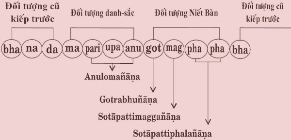

|
PHẬT GIÁO NGUYÊN THỦY
NỀN TẢNG PHẬT GIÁO QUYỂN II
QUY Y TAM BẢO Tỳ khưu Hộ Pháp
CHƯƠNG III (b)
ÂN ĐỨC PHÁP Ân đức Pháp vô cùng vi tế, sâu sắc, rộng lớn vô lượng vô biên, mà chư Thánh Thanh Văn mới có thể hiểu biết theo khả năng chứng ngộ, chứng đắc pháp thành chánh pháp theo sở đắc của quý Ngài. Còn hạng phàm nhân thì chỉ có thể hiểu biết một phần nào về pháp học chánh pháp mà thôi. Trong bài kinh Dhajaggasutta, Đức Phật thuyết dạy niệm 6 Ân đức Pháp như sau: “Svākkhāto Bhagavatā dhammo, Sandiṭṭhiko, Akāliko, Ehipassiko, Opaneyyiko, Paccattaṃ veditabbo viññūhi” [1] . Ý NGHĨA 6 ÂN ĐỨC PHÁP 1) Svākkhāto dhammo: Pháp gồm có 10 chánh pháp mà Đức Phật đã thuyết giảng hoàn hảo phần đầu, phần giữa, phần cuối, có ý nghĩa đầy đủ, văn chương trong sáng, rõ ràng và thanh tịnh. 10 chánh pháp là: Pháp học chánh pháp. 2) Sandiṭṭhiko dhammo: Chánh pháp gồm 9 pháp Siêu tam giới mà chư Thánh Nhân đã chứng đắc 4 Thánh Đạo – 4 Thánh Quả và Niết Bàn nào, rồi tự thấy, tự biết bằng trí tuệ của mình. 3) Akāliko dhammo: Chánh pháp đó là 4 Thánh Đạo cho quả tương xứng 4 Thánh Quả không có thời gian ngăn cách, nghĩa là sau khi chứng đắc Thánh Đạo nào liền cho Thánh Quả ấy sau một sát-na tâm diệt rồi sinh. 4) Ehipassiko dhammo: Chánh pháp đó là 9 pháp Siêu tam giới thuộc Chân nghĩa pháp rất trong sạch và thanh tịnh, nên dám mời đến để chứng kiến, để thực chứng, thực đắc. 5) Opaneyyiko dhammo: Chánh pháp đó là 9 pháp Siêu tam giới là pháp nên hướng tâm chứng đắc trước tiên, để mong giải thoát khổ tử sinh luân hồi trong ba giới bốn loài. 6) Paccattaṃ veditabbo viññūhi dhammo: Chánh pháp đó là 9 pháp Siêu tam giới mà chư bậc thiện trí Thánh Nhân đã chứng đắc rồi, tự mình biết rõ, tự mình nhập Thánh Quả hưởng an lạc Niết Bàn tịch tịnh. Đó là 6 Ân đức Pháp mà chỉ có bậc Thánh Thanh Văn đệ tử của Đức Phật mới có đầy đủ mà thôi. Còn các hạng Thanh Văn phàm nhân có được Ân đức Pháp thuộc về phần pháp học chánh pháp, chưa đạt được pháp thành chánh pháp đó là 9 pháp Siêu tam giới. GIẢNG GIẢI VỀ 6 ÂN ĐỨC PHÁP 1- Ân đức Pháp thứ nhất: Svākkhāto Svākkhāto Bhagavatā dhammo. (Cách đọc: Xoa-kha-tô phá-gá-voa-ta thăm-mô) Svākkhāto dhammo: Pháp gồm có 10 chánh pháp mà Đức Phật đã thuyết giảng hoàn hảo phần đầu, phần giữa, phần cuối, có ý nghĩa đầy đủ, văn chương trong sáng, rõ ràng và thanh tịnh. 10 chánh pháp là: Pháp học chánh pháp Trong Chú giải Samyuttanikāya, phần Sagāthavagga trình bày 10 chánh pháp hoàn hảo phần đầu, phần giữa, phần cuối như sau: Pháp học chánh pháp hoàn hảo phần đầu, phần giữa, phần cuối như thế nào? Đức Phật thuyết về Tạng Kinh, một bài kệ gồm có 4 câu: Câu đầu: Hoàn
hảo ở phần đầu. Khi Đức Phật thuyết một bài Kinh ngắn: Phần mở đầu:
Hoàn hảo ở phần đầu. Đức Phật thuyết một bài Kinh dài gồm có nhiều đoạn: Phần mở đầu: Hoàn hảo ở phần đầu. Phần thân bài (gồm nhiều đoạn): Hoàn hảo ở phần giữa. Phần kết luận: Hoàn hảo ở phần cuối. Đức Phật thuyết về Tạng Luật, Tạng Vi Diệu Pháp, sự hoàn hảo cũng tương tự như Tạng kinh. Chín pháp Siêu tam giới hoàn hảo ở phần đầu, phần giữa, phần cuối như thế nào? 9 pháp Siêu tam giới gồm: a) Thánh Đạo: Nhập Lưu Thánh Đạo b) Thánh Quả: Nhập Lưu Thánh Quả c) Nết Bàn: Là đối tượng của 4 Thánh Đạo Tâm và 4 Thánh Quả Tâm. 4 Thánh Đạo Tâm và 4 Thánh Quả Tâm chỉ có đối tượng Niết Bàn mà thôi, ngoài ra không có đối tượng nào khác. 9 pháp Siêu tam giới thuộc về pháp thành chánh pháp, là quả của pháp hành chánh pháp. Pháp hành chánh pháp và pháp thành chánh pháp hoàn hảo ở phần đầu, phần giữa, phần cuối như sau: Hành giới: Hoàn
hảo ở phần đầu. Hay trình bày một cách khác: Hành giới, hành
thiền định: Hoàn hảo ở phần đầu. Một cách trình bày khác: Pháp học chánh pháp: Ban đầu lắng nghe, học hỏi, nghiên cứu để hiểu rõ về pháp học chánh pháp “cách hành giới, phương pháp tiến hành thiền định và thiền tuệ…”. Đó gọi là pháp học chánh pháp hoàn hảo ở phần đầu. Pháp hành chánh pháp: Có 3 pháp hành. Pháp hành giới: Hành giả tác ý thiện tâm giữ gìn giới cho được trong sạch và trọn vẹn để làm nền tảng cho pháp hành định, pháp hành tuệ. Pháp hành định: Hành giả tiến hành thiền định dẫn đến chứng đắc các bậc thiền hữu sắc, các bậc thiền vô sắc. Pháp hành tuệ: Hành giả tiến hành thiền tuệ làm cho phát sinh trí tuệ thiền tuệ, thấy rõ, biết rõ sự sinh, sự diệt của danh pháp sắc pháp; thấy rõ, biết rõ trạng thái vô thường, trạng thái khổ, trạng thái vô ngã, dẫn đến chứng ngộ chân lý Tứ Thánh Đế. Đó là pháp hành chánh pháp hoàn hảo ở phần giữa. Pháp thành chánh pháp: Chứng đắc 4 Thánh Đạo - 4 Thánh Quả và Niết Bàn, diệt đoạn tuyệt được mọi phiền não, tham ái, ác pháp. Đó là pháp thành chánh pháp hoàn hảo ở phần cuối. Do đó, Ân đức Pháp này gọi là Svākkāto dhammo. 2- Ân đức Pháp thứ nhì: Sandiṭṭhiko Sandiṭṭhiko Bhagavatā dhammo. (Cách đọc: Xăn đít thí-cô phá-gá-voa-ta thăm-mô) Sandiṭṭhiko dhammo: Chánh pháp gồm 9 pháp Siêu tam giới mà chư Thánh Nhân đã chứng đắc 4 Thánh Đạo – 4 Thánh Quả và Niết Bàn nào, rồi tự thấy, tự biết bằng trí tuệ của mình. Sandiṭṭhiko có 3 ý nghĩa: Chứng đắc bằng trí tuệ của mình Bậc thiện trí phàm nhân tiến hành thiền tuệ dẫn đến chứng ngộ chân lý Tứ Thánh Đế, chứng đắc Nhập Lưu Thánh Đạo - Nhập Lưu Thánh Quả và Niết Bàn, trở thành bậc Thánh Nhập Lưu. Bậc Thánh Nhập Lưu tiếp tục tiến hành thiền tuệ dẫn đến chứng ngộ chân lý Tứ Thánh Đế, chứng đắc Nhất Lai Thánh Đạo - Nhất Lai Thánh Quả và Niết Bàn, trở thành bậc Thánh Nhất Lai. Bậc Thánh Nhất Lai tiếp tục tiến hành thiền tuệ dẫn đến chứng ngộ chân lý Tứ Thánh Đế, chứng đắc Bất Lai Thánh Đạo - Bất Lai Thánh Quả và Niết Bàn, trở thành bậc Thánh Bất Lai. Bậc Thánh Bất Lai tiếp tục tiến hành thiền tuệ dẫn đến chứng ngộ chân lý Tứ Thánh Đế, chứng đắc Arahán Thánh Đạo - Arahán Thánh Quả và Niết Bàn, trở thành bậc Thánh Arahán. Mỗi bậc Thánh Nhân tự thấy, tự biết bằng trí tuệ của mình. Diệt đoạn tuyệt phiền não Bốn Thánh Đạo Tuệ có khả năng đặc biệt diệt đoạn tuyệt được phiền não (samucchedapahāna), tùy theo mỗi Thánh Đạo Tuệ như sau: Nhập Lưu Thánh Đạo Tuệ có khả năng diệt đoạn tuyệt được 2 loại phiền não là tâm tà kiến và tâm hoài nghi. Nhất Lai Thánh Đạo Tuệ có khả năng diệt đoạn tuyệt được 1 loại phiền não là tâm sân loại thô. Bất Lai Thánh Đạo Tuệ có khả năng diệt đoạn tuyệt được 1 loại phiền não là tâm sân loại vi tế. Arahán Thánh Đạo Tuệ có khả năng diệt đoạn tuyệt được 7 loại phiền não còn lại là tâm tham, si, ngã mạn, phóng tâm, buồn ngủ, không biết hổ thẹn tội lỗi, không biết ghê sợ tội lỗi. Mọi phiền não, mọi tham ái, mọi ác pháp đều bị diệt đoạn tuyệt không còn dư sót. Bốn Thánh Quả Tuệ có khả năng đặc biệt diệt bằng cách vắng lặng (paṭipassa-dhipahāna) được loại phiền não mà Thánh Đạo Tuệ đã diệt đoạn tuyệt được rồi. Niết Bàn là đối tượng giải thoát khổ, diệt tử sinh luân hồi (nissaraṇappahāna). Theo định luật tự nhiên, sau khi đã chứng đắc Thánh Đạo - Thánh Quả và Niết Bàn nào rồi, thì bậc Thánh có trí tuệ quán xét (paccavekkhaṇañāṇa) quán xét 5 điều: Quán xét biết rõ Thánh
Đạo nào đã chứng đắc. Riêng bậc Thánh Arahán thì không còn quán xét biết rõ phiền não nào chưa bị diệt đoạn tuyệt, bởi vì Arahán Thánh Đạo Tuệ đã diệt đoạn tuyệt tất cả mọi phiền não không còn dư sót. Tự chứng kiến Bậc Thánh Nhập Lưu tự biết, tự khẳng định sẽ không còn tái sinh trong 4 cõi ác giới (địa ngục, ngạ quỷ, atula, súc sinh), chỉ còn tái sinh ở cõi người, cõi trời dục giới nhiều nhất là 7 kiếp, rồi sẽ trở thành bậc Thánh Arahán tịch diệt Niết Bàn. Bậc Thánh Nhất Lai tự biết, tự khẳng định chỉ còn tái sinh 1 kiếp trong cõi người hoặc cõi trời dục giới, rồi sẽ trở thành bậc Thánh Arahán tịch diệt Niết Bàn. Bậc Thánh Bất Lai tự biết, tự khẳng định không trở lại tái sinh trong cõi dục giới, chỉ còn tái sinh ở cõi sắc giới, rồi sẽ trở thành bậc Thánh Arahán tịch diệt Niết Bàn tại cõi sắc giới ấy. Bậc Thánh Arahán tự biết, tự khẳng định ngay kiếp hiện tại này là kiếp chót, sẽ tịch diệt Niết Bàn chấm dứt tử sinh luân hồi trong ba giới bốn loài. Do đó, Ân đức Pháp này gọi là Sandiṭṭhiko dhammo. 3- Ân đức Pháp thứ ba: Akāliko Akāliko Bhagavatā dhammo. (Cách đọc: Á-ca-lí-cô phá-gá-voa-ta thăm-mô) Akāliko dhammo: Chánh pháp đó là 4 Thánh Đạo cho quả tương xứng 4 Thánh Quả không có thời gian ngăn cách, nghĩa là sau khi chứng đắc Thánh Đạo nào liền cho Thánh Quả ấy sau một sát-na tâm diệt rồi sinh. Akāliko có 2 ý nghĩa: Thánh Đạo diệt, Thánh Quả sinh không có thời gian ngăn cách. Thánh Đạo - Thánh Quả cùng trong một Thánh Đạo lộ trình tâm. Ví dụ: Trong Nhập Lưu Thánh Đạo lộ trình tâm sinh diệt theo tuần tự như sau: Bhavangacitta ’ Bhavaṅgacalana ’ Bhavaṅgupaccheda ’ Manodvāravajjanacitta ’ Parikamma ’ Upacāra ’ Anuloma ’ Gotrabhù ’ Sotāpattimagga ’ Sotāpattiphala (2 - 3 sát-na tâm) ’ Bhavagacitta. Chấm dứt Nhập Lưu lộ trình tâm. Giải thích: Bhavangacitta: Hộ kiếp tâm (viết tắt bha) Bhavaṅgacalana: Hộ kiếp tâm rung động (viết tắt na) Bhavaṅgupaccheda: Hộ kiếp tâm bị cắt đứt (viết tắt da) Manodvāravajjanacitta: Ý môn hướng tâm (viết tắt ma) Parikamma: Chuẩn bị Nhập Lưu Thánh Đạo Tâm sẽ phát sinh (viết tắt pari) Upacāra: Cận Nhập Lưu Thánh Đạo Tâm sẽ phát sinh (viết tắt upa) Anuloma: Thuận dòng theo 37 pháp để chứng đắc Nhập Lưu Thánh Đạo (viết tắt anu) Gotrabhu: Chuyển dòng từ phàm nhân sang Thánh Nhân (viết tắt got) Sotāpattimaggacitta: Nhập Lưu Thánh Đạo Tâm 1 sát-na tâm (viết tắt mag) Sotāpattiphalacitta: Nhập Lưu Thánh Quả Tâm 2-3 sát-na tâm (viết tắt pha) Bhavaṅgacitta: Hộ kiếp tâm, chấm dứt Nhập Lưu Thánh Đạo lộ trình tâm
ĐỒ BIỂU NHẬP LƯU THÁNH ĐẠO LỘ TRÌNH TÂM  Qua Nhập Lưu Thánh Đạo lộ trình tâm nhận thấy: Nhập Lưu Thánh Đạo Tâm diệt, liền sinh Nhập Lưu Thánh Quả Tâm, không có thời gian ngăn cách. Tương tự đối với Nhất Lai Thánh Đạo lộ trình tâm, Bất Lai Thánh Đạo lộ trình tâm và Arahán Thánh Đạo lộ trình tâm: Thánh Đạo Tâm diệt, Thánh Quả Tâm liền sinh không có thời gian ngăn cách. Do đó, 4 Thánh Đạo là pháp cho 4 Thánh Quả không có thời gian ngăn cách. 4 Thánh Đạo cho 4 Thánh Quả không có thời gian chờ đợi Tam giới thiện pháp Dục giới thiện pháp có khả năng cho quả sớm hoặc muộn, có thời gian chờ đợi trong kiếp hiện tại và còn cho quả trong những kiếp vị lai. Sắc giới thiện pháp và vô sắc giới thiện pháp cho quả tái sinh kiếp kế tiếp lên cõi trời sắc giới hay cõi trời vô sắc giới tùy theo bậc thiền sở đắc của mình. Siêu tam giới thiện pháp đó là 4 Thánh Đạo Tâm liền cho quả là 4 Thánh Quả Tâm tương xứng không có thời gian chờ đợi, nghĩa là khi Thánh Đạo Tâm nào sinh rồi diệt, liền phát sinh Thánh Quả Tâm ấy sinh chỉ sau một sát-na tâm, mà thôi không có thời gian chờ đợi. Do đó, Ân đức Pháp này gọi là Akāliko dhammo. 4- Ân đức Pháp thứ tư: Ehipassiko Ehipassiko Bhagavatā dhammo. (Cách đọc: Ê-hi pát-xí-cô phá-gá-voa-ta thăm-mô) Ehipassiko dhammo: Chánh pháp đó là 9 pháp Siêu tam giới thuộc Chân nghĩa pháp rất trong sạch và thanh tịnh, nên dám mời đến để chứng kiến, để thực chứng, thực đắc. Ehipassiko có 2 ý nghĩa: Chín pháp Siêu tam giới có thực tánh Chân nghĩa pháp nên thực chứng 9 pháp Siêu tam giới đó là 4 Thánh Đạo - 4 Thánh Quả và Niết Bàn thuộc Paramattha-dhamma (Chân nghĩa pháp), có thực tánh rõ ràng, không biến chất theo thời gian, không gian nghĩa là 9 pháp Siêu tam giới đã phát sinh trong thời quá khứ như thế nào, đang phát sinh trong thời hiện tại và sẽ phát sinh trong thời vị lai cũng như thế ấy. Cho nên 9 pháp Siêu tam giới có thực tánh chân thật rõ ràng, do có thực tánh rõ ràng chân thật như vậy, nên mới dám gọi đến, mời đến thực hành đúng theo pháp hành Trung Đạo để thực chứng, để chứng kiến Thánh Đạo - Thánh Quả và Niết Bàn bằng trí tuệ thiền tuệ Siêu tam giới của mình. Ví dụ: Trường hợp trong hộp có viên ngọc quý, nên mới dám mời người khác đến xem... Chín pháp Siêu tam giới có thực tánh hoàn toàn trong sạch thanh tịnh 9 pháp Siêu tam giới là chánh pháp hoàn toàn trong sạch và thanh tịnh, bởi vì 9 pháp Siêu tam giới này không hề bị ô nhiễm bởi phiền não, nên dám mời đến, động viên khuyến khích đến để chứng kiến, thực hành đúng theo pháp hành Trung Đạo, thì sẽ chứng đắc 4 Thánh Đạo - 4 Thánh Quả và Niết Bàn, bằng trí tuệ thiền tuệ Siêu tam giới của mình. Ví dụ: Trong đời này, những vật có thật, đang hiện hữu, song là những vật bất tịnh, ô uế, hôi thối, bẩn thỉu đáng tránh xa thì không có một ai dám mời, dám động viên khuyến khích người khác đến để xem. Còn 9 pháp Siêu tam giới này là Chân nghĩa pháp hoàn toàn trong sáng và thanh tịnh, nên dám mời, dám động viên khuyến khích người khác đến để chứng kiến, để thực chứng chân lý Tứ Thánh Đế, chứng đắc 4 Thánh Đạo - 4 Thánh Quả và Niết Bàn, để mong giải thoát khổ tử sinh luân hồi trong ba giới bốn loài. Do đó, Ân đức pháp này gọi là Ehipassiko dhammo. 5- Ân đức Pháp thứ năm: Opaneyyiko Opaneyyiko Bhagavatā dhammo (Cách đọc: Ô-pá-nây-di-cô phá-gá-voa-ta thăm-mô) Opaneyyiko dhammo: Chánh pháp đó là 9 pháp Siêu tam giới là pháp nên hướng tâm chứng đắc trước tiên, để mong giải thoát khổ tử sinh luân hồi trong ba giới bốn loài. Những hạng phàm nhân chắc chắn chưa từng chứng đắc Thánh Đạo - Thánh Quả nào, cũng chưa từng chứng ngộ Niết Bàn lần nào, nên thường bị 11 thứ lửa [2] và 1.500 loại phiền não thiêu đốt, làm cho nóng nảy thân tâm, chẳng bao giờ được an lạc thật sự. Do đó, sự dập tắt lửa phiền não là việc cần kíp, không nên chậm trễ. Chánh Pháp mà diệt được phiền não một cách hữu hiệu chỉ có 9 pháp Siêu tam giới. 4 Thánh Đạo Tuệ có khả năng đặc biệt diệt đoạn tuyệt được phiền não (Samucche-dapahāna). 4 Thánh Quả Tuệ có khả năng diệt bằng cách làm vắng lặng được phiền não (paṭipassaddhipahāna). Niết Bàn là đối tượng giải thoát khổ, diệt tử sinh luân hồi (Nissaraṇapahāna). Bậc Nhập Lưu Thánh Đạo Tuệ có khả năng diệt đoạn tuyệt được 2 loại phiền não là tà kiến và hoài nghi, và vĩnh viễn không bao giờ khổ do tà kiến và hoài nghi nữa. Bậc Nhất Lai Thánh Đạo Tuệ có khả năng diệt đoạn tuyệt được 1 loại phiền não là tâm sân loại thô, và vĩnh viễn không bao giờ bị khổ do tâm sân loại thô nữa. Bậc Bất Lai Thánh Đạo Tuệ có khả năng diệt đoạn tuyệt được 1 loại phiền não là tâm sân loại vi tế và vĩnh viễn không bao giờ bị khổ do tâm sân loại vi tế nữa. Bậc Arahán Thánh Đạo Tuệ có khả năng diệt đoạn tuyệt được tất cả mọi phiền não còn lại là tham, si, ngã mạn, phóng tâm, buồn ngủ, không biết hổ thẹn tội lỗi, không biết ghê sợ tội lỗi và tất cả mọi tham ái, mọi ác pháp không còn dư sót. Do đó, bậc Arahán hoàn toàn không có khổ tâm, chỉ còn khổ thân mà thôi. Đối với hạng phàm nhân còn đầy đủ mọi phiền não, tham ái, ác pháp, thì còn phải khổ thân, khổ tâm, và khi còn tử sinh luân hồi trong tam giới, thì khó tránh khỏi khổ trong 4 cõi ác giới (địa ngục, atula, ngạ quỷ, súc sinh). Mong muốn giải thoát khổ tái sinh, thì chỉ có 4 Thánh Đạo - 4 Thánh Quả và Niết Bàn mà thôi. Vì vậy, hành giả quyết tâm tinh tấn không ngừng, đặt ưu tiên hàng đầu là hướng tâm đến sự chứng đắc Thánh Đạo - Thánh Quả và Niết Bàn mà thôi. Dù cho lửa cháy trên đầu cũng không quan tâm, bởi vì, họ suy nghĩ rằng: “Lửa cháy trên đầu chỉ làm khổ (nóng nảy) một kiếp hiện tại, còn những phiền não chưa diệt được, không chỉ làm khổ (nóng nảy) trong kiếp hiện tại, mà còn khổ lâu dài trong vô số vô số kiếp vị lai.” Sự chết là điều chắc chắn, nhưng không biết chắc sẽ chết khi nào. Cho nên, hành giả đặt ưu tiên hàng đầu là hướng tâm cố gắng tinh tấn không ngừng, tiến hành thiền tuệ để chứng đắc Thánh Đạo - Thánh Quả và Niết Bàn. Do đó, 4 Thánh Đạo - 4 Thánh Quả và Niết Bàn là 9 pháp Siêu tam giới, nên đặt ưu tiên hướng tâm của mình để chứng đắc trước tiên. Do đó, Ân đức Pháp này gọi là Opaneyyiko dhammo. 6- Ân đức Pháp thứ sáu: Paccattaṃ veditabbo viññūhi Paccattaṃ veditabbo viññūhi Bhagavatā dhammo. (Cách đọc: Pách-chát-tăng vuê-đí-tắp-bô vinh-nhu-hí phá-gá-voa-ta thăm-mô) Paccattaṃ veditabbo viññūhi dhammo: Chánh pháp đó là 9 pháp Siêu tam giới mà chư bậc thiện trí Thánh Nhân đã chứng đắc rồi, tự mình biết rõ, tự mình nhập Thánh Quả hưởng an lạc Niết Bàn tịch tịnh. Bậc thiện trí Thánh Nhân có 3 hạng: Bậc thiện trí có trí tuệ bậc thượng (Ugghaṭitaññū) Bậc thiện trí này có trí tuệ sắc bén, tinh nhanh, khi lắng nghe một bài kệ có 4 câu, chỉ cần nghe 2 câu đầu, bậc thiện trí này có trí tuệ có thể chứng đắc Thánh Đạo - Thánh Quả và Niết Bàn, ngay khi ấy, không cần chờ đợi để nghe đến 2 câu sau. Bậc thiện trí có trí tuệ bậc trung (Vipañcitaññū) Bậc thiện trí này có trí tuệ sắc bén, khi lắng nghe pháp đầu đề xong, lắng nghe tiếp theo lời giảng giải, khai triển. Bậc thiện trí này, có trí tuệ có thể chứng đắc Thánh Đạo - Thánh Quả và Niết Bàn ngay khi ấy. Bậc thiện trí có trí tuệ bậc thường (Neyya) Bậc thiện trí này có trí tuệ khi lắng nghe pháp đầu đề, lắng nghe tiếp theo lời giảng giải, khai triển xong rồi, vị này còn cần phải gần gũi, thân cận với vị thiền sư, chư Thánh Thanh Văn để được giúp đỡ, hỗ trợ. Bậc thiện trí này tiến hành thiền tuệ trải qua một thời gian mau hoặc lâu, mới có thể chứng đắc Thánh Đạo - Thánh Quả và Niết Bàn trong kiếp hiện tại ấy. Bốn bậc Thánh Nhân Bậc Thánh Nhập Lưu, bậc Thánh Nhất Lai, bậc Thánh Bất Lai và bậc Thánh Arahán. Mỗi bậc Thánh sau khi vừa mới chứng đắc Thánh Đạo - Thánh Quả và Niết Bàn xong, tiếp theo sau phát sinh trí tuệ quán xét (paccavekkhaṇañāṇa) Thánh Đạo-Thánh Quả vừa chứng đắc, Niết Bàn vừa chứng ngộ, phiền não nào đã bị diệt đoạn tuyệt rồi, phiền não nào còn lại chưa diệt được. Do đó, mỗi bậc Thánh Nhân chắc chắn tự mình biết rõ Thánh Đạo -Thánh Quả mà mình đã tự chứng đắc. Khả năng đặc biệt của bậc Thánh Nhân Những bậc Thánh Nhân ngang hàng, có thể biết nhau qua đàm đạo hoặc bằng tha tâm thông. Những bậc Thánh Nhân bậc thấp không thể biết được bậc Thánh Nhân bậc cao, mà chỉ có bậc Thánh Nhân bậc cao mới có thể biết được bậc Thánh Nhân bậc thấp, cũng qua cuộc đàm đạo hoặc bằng tha tâm thông. Những hạng phàm nhân hoàn toàn không thể biết được bậc Thánh Nhân. Bậc Thánh Nhân nhập Thánh Quả Bậc Thánh Nhân có thể nhập Thánh Quả (phalasamāpatti) mà mình đã chứng đắc, để hưởng sự an lạc Niết Bàn. Mỗi bậc Thánh Nhân nào đã chứng đắc các bậc thiền Siêu tam giới có đối tượng Niết Bàn, thì bậc Thánh Nhân ấy có thể nhập Thánh Quả Tâm để hưởng sự an lạc Niết Bàn. Bậc Thánh Nhập Lưu, có thể nhập Nhập Lưu Thánh Quả Tâm, để hưởng sự an lạc Niết Bàn. Bậc Thánh Nhất Lai, có thể nhập Nhất Lai Thánh Quả Tâm, để hưởng sự an lạc Niết Bàn. Bậc Thánh Bất Lai, có thể nhập Bất Lai Thánh Quả Tâm, để hưởng sự an lạc Niết Bàn. Bậc Thánh Arahán, có thể nhập Arahán Thánh Quả Tâm, để hưởng sự an lạc Niết Bàn. Bậc Thánh Nhân đã chứng đắc đến Thánh Quả Tâm nào, thì bậc Thánh Nhân ấy chỉ có thể nhập Thánh Quả Tâm ấy mà thôi, để hưởng sự an lạc Niết Bàn. Như vậy bậc Thánh Nhân bậc thấp không thể nhập Thánh Quả Tâm bậc cao, và Thánh Nhân bậc cao cũng không nhập Thánh Quả Tâm bậc thấp. 9 pháp Siêu tam giới mà bậc Thánh Nhân đã chứng đắc rồi, tự mình biết rõ, chính mình an hưởng sự an lạc Niết Bàn, không liên quan đến người khác. Vì vậy, Thánh Đạo Tuệ của Thầy không thể diệt phiền não của đệ tử. Người đệ tử có thể thừa hưởng những thứ vật dụng của Thầy, song không thể nhập Thánh Quả của Thầy để hưởng sự an lạc Niết Bàn. Do đó, Ân đức Pháp này gọi là Paccataṃ veditabbo viññūhi. Ân đức Pháp được thực chứng Trong bài kinh Brahmaṇasutta [3] , Đức Phật thuyết về Ân đức Pháp được thực chứng, tự thấy tự biết do chính mình được tóm lược như sau: Một thuở nọ, một vị Bàlamôn đến đảnh lễ Đức Thế Tôn xong, ngồi một nơi hợp lẽ, bèn bạch hỏi Đức Thế Tôn rằng: - Kính bạch Đức Thế Tôn, do nhân nào mà Ân đức Pháp gọi là Sanditthiko,... Akāliko, Ehipassiko, Opaneyyiko, Paccattam veditabbo vinnūhi? Đức Thế Tôn truyền dạy rằng: - Này Bàlamôn, người có tâm tham dục phát sinh, tâm tham dục khống chế, tâm tham dục bắt buộc xui khiến tự làm khổ mình, làm khổ người, tự làm khổ cả mình lẫn người, chịu nỗi khổ thân, nỗi khổ tâm. Khi Thánh Đạo Tuệ phát sinh diệt đoạn tuyệt được tâm tham dục rồi, người ấy không còn tự làm khổ mình, không làm khổ người, không tự làm khổ cả mình lẫn người, không còn chịu khổ thân, khổ tâm nữa. Này Bàlamôn, do nhân ấy, Ân đức Pháp gọi là Sanditthiko, Akāliko, Ehipassiko, Opaneyyiko, Paccattaṃ veditabbo vinnūhi. Này Bàlamôn, người có tâm sân hận phát sinh, tâm sân hận khống chế, tâm sân hận bắt buộc xui khiến tự làm khổ mình…. Này Bàlamôn, người có tâm si mê phát sinh, tâm si mê khống chế, tâm si mê bắt buộc xui khiến tự làm khổ mình, làm khổ người, tự làm khổ cả mình lẫn người, chịu khổ nỗi khổ thân, nỗi khổ tâm. Khi Thánh Đạo Tuệ phát sinh diệt đoạn tuyệt được tâm si mê rồi, người ấy không còn tự làm khổ mình, làm khổ người, tự làm khổ cả mình lẫn người, không còn chịu nỗi khổ thân, nỗi khổ tâm nữa. Này Bàlamôn, do nhân ấy, Ân đức Pháp gọi là Sanditthiko, Akāliko, Ehipassiko, Opaneyyiko, Paccattaṃ veditabbo vinnūhi. Ông Bàlamôn tán dương ca tụng Đức Thế Tôn, ông xin quy y Đức Thế Tôn, xin quy y Pháp Bảo, xin quy y Tăng Bảo. Ông kính xin Đức Thế Tôn chấp nhận ông là một cận sự nam đã quy y Tam Bảo, kể từ đó cho đến trọn đời. Niết Bàn là pháp chứng ngộ Trong bài kinh Nibbutasutta [4] , Đức Thế Tôn thuyết về Niết Bàn là pháp chứng ngộ, được tóm lược như sau: Một thuở nọ, ông Bàlamôn Jānusasoṇī đến đảnh lễ Đức Thế Tôn xong, ngồi một nơi hợp lẽ, bèn bạch hỏi Đức Thế Tôn rằng: Kính bạch đức Thế Tôn, Niết Bàn gọi là pháp Sandiṭṭhikaṃ,... Do nhân nào mà Niết Bàn gọi là Pháp Sandiṭṭhikaṃ, Akālikaṃ, Ehipassikaṃ, Opaneyyikaṃ, Paccattaṃ veditabbaṃ viññūhi? Đức Thế Tôn dạy rằng: - Này, Bàlamôn, người có tâm tham dục, có tâm sân hận, có tâm si mê phát sinh, tự làm khổ mình, làm khổ người, tự làm khổ cả mình lẫn người, chịu nỗi khổ thân, khổ tâm. Khi Thánh Đạo Tuệ phát sinh có đối tượng Niết Bàn, diệt đoạn tuyệt được tâm tham dục, tâm sân hận, tâm si mê rồi, người ấy không còn tự làm khổ mình, không làm khổ người, không làm khổ cả mình lẫn người, không chịu nỗi khổ thân, khổ tâm nữa. Này Bàlamôn, do nhân ấy, Niết Bàn gọi là Pháp Sandiṭṭhikaṃ, Akālikaṃ, Ehipassikaṃ, Opaneyyikaṃ, Paccattaṃ veditabbaṃ viññūhi. Ông Bàlamôn tán dương ca tụng Đức Thế Tôn, ông xin quy y Đức Thế Tôn, xin quy y Pháp Bảo, xin quy y Tăng Bảo. Ông kính xin Đức Thế Tôn chấp nhận ông là một cận sự nam đã quy y Tam Bảo, kể từ đó cho đến trọn đời. 6 Ân đức Pháp Chư Thánh Thanh Văn đệ tử Đức Phật có khả năng đạt đến 6 Ân đức Pháp trọn vẹn, nghỉa là quý Ngài đã hiểu biết rõ pháp học chánh pháp, đó là hiểu biết rõ lời giáo huấn của Đức Phật; đã thực hành pháp hành chánh pháp, đó là đã hành giới hoàn toàn trong sạch, đã hành pháp hành thiền định, đã hành pháp hành thiền tuệ, đã chứng ngộ chân lý Tứ Thánh Đế, đã chứng đắc 4 Thánh Đạo - 4 Thánh Quả và Niết Bàn đó là pháp thành chánh pháp. Còn các hàng Thanh Văn phàm nhân có khả năng đạt đến Ân đức Pháp thuộc về phần pháp học chánh pháp và phần pháp hành chánh pháp đó là hành giới, đang hành pháp hành thiền định, đang hành pháp hành thiền tuệ còn thuộc về pháp trong tam giới, chưa chứng đắc 4 Thánh Đạo - 4 Thánh Quả và Niết Bàn. -ooOoo-
ĐỀ MỤC NIỆM ÂN ĐỨC PHÁP Ân đức Pháp là đối tượng của đề mục niệm Ân đức Pháp. Đề mục niệm Ân đức Pháp là 1 trong 10 đề mục niệm (ānussati) cũng là 1 trong 40 đề mục thiền định. Muốn tiến hành đề mục niệm Ân đức Pháp, trước tiên hành giả cần phải học hỏi, nghiên cứu cho hiểu rõ ý nghĩa 6 Ân đức Pháp kỹ càng, từng các chi pháp cho thật rành rẽ phần pháp học. Về phần pháp hành, trước khi tiến hành đề mục niệm Ân đức Pháp, hành giả có đức tin nơi Tam Bảo: Nếu là người cận sự nam, cận sự nữ, thì nên xin thọ phép quy y Tam Bảo và ngũ giới hoặc bát giới, cửu giới... Nếu là Sadi, thì nên xin thọ phép quy y Tam Bảo và Sadi thập giới với vị Thầy tế độ hoặc với một vị Đại đức. Nếu là vị Tỳ khưu, thì nên xin sám hối āpatti với một vị Tỳ khưu khác. Như vậy, là thuộc về phần pháp hành giới. Khi hành giả đã có giới trong sạch trọn vẹn, sẽ làm nền tảng cho pháp hành thiền định đề mục niệm Ân đức Pháp. Phương pháp niệm Ân đức Pháp 6 Ân đức Pháp này có trong toàn giáo pháp của Đức Phật. Chánh pháp gồm có 10 pháp đó là pháp học và 9 pháp Siêu tam giới (4 Thánh Đạo + 4 Thánh Quả + 1 Niết Bàn). Muốn tiến hành đề mục niệm Ân đức Pháp, hành giả cần phải học hỏi, hiểu rõ rành rẽ 6 Ân đức Pháp. Sau khi học hỏi, hiểu rõ đầy đủ 6 Ân đức Pháp xong rồi, hành giả nên tìm một nơi thanh vắng, để thuận lợi tiến hành đề mục niệm Ân đức Pháp này. Niệm Ân đức Pháp có nhiều cách. Cách thứ nhất (phổ thông): Niệm 6 Ân đức Pháp. Hành giả tiến hành niệm 6 Ân đức Pháp như sau: “Svākkhāto Bhagavatā dhammo, Sandiṭṭhiko, Akāliko, Ehipassiko, Opaneyyiko, Paccattaṃ veditabbo viññūhi...” [5] làm đối tượng thiền định. Hành giả tâm niệm đến Ân đức Pháp nào, nên hiểu rõ ý nghĩa và chi pháp của Ân đức Pháp ấy, định tâm theo dõi mỗi Ân đức Pháp như vậy, hằng trăm lần, hằng ngàn lần... trong suốt thời gian tiến hành niệm 6 Ân đức Pháp, để làm tăng trưởng đức tin trong sạch nơi Đức Pháp Bảo. Cách thứ nhì (đặc biệt): Niệm một câu Ân đức Pháp. Hành giả có thể chọn một Ân đức Pháp nào trong 6 Ân đức Pháp làm đối tượng, để tiến hành niệm Ân đức Pháp, nên hiểu rõ ý nghĩa và chi pháp của Ân đức Pháp ấy, luôn luôn định tâm nơi Ân đức Pháp ấy. Ví dụ: Niệm Ân đức Pháp thứ nhất Svākkhāto dhammo..., Svākkhāto dhammo... làm đối tượng thiền định. Hoặc: Niệm Ân đức Pháp thứ nhì Sandiṭṭhiko dhammo..., Sandiṭṭhiko dhammo... làm đối tượng thiền định. Hành giả tâm niệm câu Ân đức Pháp ấy, đồng thời hiểu rõ ý nghĩa và chi pháp của Ân đức Pháp ấy, định tâm theo dõi Ân đức Pháp ấy hằng trăm lần, hằng ngàn lần... trong suốt thời gian tiến hành niệm Ân đức Pháp, để làm tăng trưởng đức tin trong sạch nơi Đức Pháp Bảo. Đề mục thiền định niệm Ân đức Pháp có ý nghĩa vô cùng vi tế, sâu sắc, rộng lớn vô lượng vô biên, nên định tâm không thể an định vào một điểm nào nhất định được, nên chỉ có khả năng dẫn đến chứng đạt cận định mà thôi, không thể chứng đạt đến an định, do đó không thể chứng đắc được bậc thiền hữu sắc nào cả. Như vậy, tâm cận định của đề mục niệm Ân đức Pháp này vẫn còn trong dục giới đại thiện tâm, thuộc về dục giới thiện nghiệp. Quả báu trong kiếp hiện tại Dục giới thiện nghiệp được tạo do thiền định này cho quả ở kiếp hiện tại, trong khi đang tiến hành niệm Ân đức Pháp, đại thiện tâm hợp với hỷ, phát sinh hỷ lạc rất vi tế ở ý thức tâm, nên hành giả có thể ngồi niệm Ân đức Pháp hằng giờ vẫn cảm thấy an lạc lạ thường. Do năng lực dục giới thiện nghiệp này, trong cuộc sống hằng ngày của hành giả thường được an lạc, tránh khỏi điều rủi ro tai hại một cách phi thường, phần đông mọi người kính mến, chư thiên cũng kính yêu và hộ trì hành giả. Quả báu ở kiếp vị lai Dục giới thiện nghiệp được tạo do tiến hành thiền định này, có phần vững chắc hơn dục giới thiện nghiệp được tạo do bố thí và giữ giới. Cho nên, hành giả khi gần chết, tâm không mê muội, tâm bình tĩnh sáng suốt. Vì vậy, sau khi chết, nếu dục giới thiện nghiệp này cho quả tái sinh làm người, thì sẽ là người có trí tuệ thuộc “hạng người tam nhân”, hoặc tái sinh làm chư thiên ở một trong 6 cõi trời dục giới, chư thiên ở cõi trời nào cũng có nhiều oai lực, có hào quang sáng ngời đặc biệt. Đề mục niệm Ân đức Pháp là một đề mục dễ làm cho phát sinh đức tin nơi Tam Bảo, mà đức tin là nền tảng mọi thiện pháp từ dục giới thiện pháp, sắc giới thiện pháp, vô sắc giới thiện pháp cho đến Siêu tam giới thiện pháp. Đề mục niệm Ân đức Pháp không chỉ là đề mục thiền định, có khả năng dẫn đến chứng đạt cận định, mà còn là đối tượng làm nền tảng để tiến hành thiền tuệ, dẫn đến sự nhàm chán trong ngũ uẩn, diệt tận tham ái, phiền não, chứng ngộ chân lý Tứ Thánh Đế, chứng đắc Thánh Đạo - Thánh Quả và Niết Bàn được. Như Đức Phật dạy: “Này chư Tỳ khưu, có một pháp hành mà hành giả đã tiến hành, đã hành thuần thục, chắc chắn dẫn đến phát sinh sự nhàm chán trong ngũ uẩn, danh pháp - sắc pháp, để diệt tận tham ái, sân hận, si mê, để làm vắng lặng mọi phiền não, để phát sinh trí tuệ thiền tuệ, thấy rõ trạng thái vô thường, trạng thái khổ, trạng thái vô ngã, để chứng ngộ chân lý Tứ Thánh Đế, chứng đắc 4 Thánh Đạo - 4 Thánh Quả và Niết Bàn. Pháp hành ấy là gì? Pháp hành ấy chính là Dhammānussati: pháp hành niệm Ân đức Pháp. Này chư Tỳ khưu, pháp hành niệm Ân đức Pháp, mà hành giả đã tiến hành, đã hành thuần thục, chắc chắn dẫn đến phát sinh sự nhàm chán trong ngũ uẩn, danh pháp, sắc pháp, để diệt tận tham ái, sân hận, si mê, để làm vắng lặng mọi phiền não, để phát sinh trí tuệ thiền tuệ, thấy rõ trạng thái vô thường, trạng thái khổ, trạng thái vô ngã, để chứng ngộ chân lý Tứ Thánh Đế, chứng đắc 4 Thánh Đạo - 4 Thánh Quả và Niết Bàn” [6] . Qua lời giáo huấn của Đức Phật trên, thì đề mục niệm Ân đức Pháp không chỉ là đề mục thiền định, mà còn làm nền tảng để tiến hành thiền tuệ nữa. Đề mục niệm Ân đức Pháp có hai giai đoạn: Giai đoạn đầu: Đề mục niệm Ân đức Pháp thuộc thiền định, hành giả tiến hành niệm Ân đức Pháp có khả năng dẫn đến sự chứng đạt đến cận định (phương pháp đã trình bày ở phần trước). Giai đoạn sau: Sau khi tiến hành đề mục niệm Ân đức Pháp chứng đạt đến cận định, hành giả cần phải thoát ra khỏi đề mục niệm Ân đức Pháp, dùng tâm cận định của đề mục niệm Ân đức Pháp làm nền tảng để tiến hành thiền tuệ. Pháp hành thiền tuệ Hành giả tiến hành thiền tuệ cần phải có danh pháp, sắc pháp hoặc thân, thọ, tâm, pháp thuộc Chân nghĩa pháp (Paramatthadhamma) làm đối tượng thiền tuệ. * Đề mục niệm Ân đức Pháp làm nền tảng, làm đối tượng để tiến hành thiền tuệ như thế nào? Đúng theo thực tánh của các pháp, thì không có người niệm Ân đức Pháp, mà chỉ có tâm đại thiện hợp với trí tuệ làm phận sự niệm Ân đức Pháp mà thôi. Hành giả tiến hành thiền định với đề mục niệm Ân đức Pháp đạt đến cận định được phân tích theo danh pháp sắc pháp như sau: Tâm cận định này là tâm đại thiện hợp với trí tuệ thuộc về danh pháp (thuộc về phần niệm tâm trong Tứ Niệm Xứ). Tâm cận định này nương nhờ nơi sắc ý căn (hadayavatthu) thuộc về sắc pháp. Như vậy, danh pháp liên quan với sắc pháp này làm đối tượng của pháp hành thiền tuệ. Hay một cách khác: Tâm cận định này là tâm đại thiện hợp với trí tuệ, thuộc về thức uẩn. - Thọ tâm sở đồng sinh với tâm đại thiện ấy, thuộc về thọ uẩn. - Tưởng tâm sở đồng sinh với tâm đại thiện ấy, thuộc về tưởng uẩn. - Các tâm sở còn lại đồng sinh với tâm đại thiện ấy, thuộc về hành uẩn. - Sắc ý căn (hadayavatthu) là nơi nương nhờ để phát sinh tâm cận định (tâm đại thiện ấy), thuộc sắc uẩn. (ngũ uẩn này, thuộc về phần niệm pháp trong Tứ Niệm Xứ) Như vậy, ngũ uẩn này làm đối tượng của pháp hành thiền tuệ. Hành giả tiến hành thiền tuệ có chánh niệm, có trí tuệ thiền tuệ, thấy rõ biết rõ danh pháp, sắc pháp hoặc ngũ uẩn có sự sinh, sự diệt; trí tuệ thiền tuệ thấy rõ biết rõ trạng thái vô thường, trạng thái khổ, trạng thái vô ngã của danh pháp, sắc pháp hoặc của ngũ uẩn, dẫn đến chứng ngộ chân lý Tứ Thánh Đế, chứng đắc 4 Thánh Đạo - 4 Thánh Quả và Niết Bàn, diệt đoạn tuyệt được mọi phiền não, mọi tham ái, mọi ác pháp, trở thành bậc Thánh Arahán. Như vậy, gọi là đề mục niệm Ân đức Pháp làm nền tảng để tiến hành thiền tuệ. Như Đức Phật dạy: “Này chư Tỳ khưu, pháp hành niệm Ân đức Pháp mà hành giả đã tiến hành, đã hành thuần thục, chắc chắn dẫn đến phát sinh sự nhàm chán trong ngũ uẩn, danh pháp, sắc pháp này, để diệt tận tham ái, sân hận, si mê, để làm vắng lặng mọi phiền não, để phát sinh trí tuệ thiền tuệ, thấy rõ, biết rõ trạng thái vô thường, trạng thái khổ, trạng thái vô ngã, để chứng ngộ chân lý Tứ Thánh Đế, chứng đắc 4 Thánh Đạo - 4 Thánh Quả và Niết Bàn”. Quả báu đặc biệt niệm Ân đức Pháp Hành giả tiến hành niệm Ân đức Pháp, trong kiếp hiện tại chưa chứng đắc 4 Thánh Đạo - 4 Thánh Quả và Niết Bàn, hành giả sẽ được hưởng những quả báu đặc biệt ngay trong kiếp hiện tại và nhiều kiếp vị lai như sau: - Được phần đông chúng sinh kính trọng. - Thiện tâm trong sạch thanh tịnh. - Khi sắp chết, tâm bình tĩnh sáng suốt, không mê muội. - Sau khi chết, do thiện nghiệp này cho quả tái sinh làm người cao quý hoặc chư thiên cao quý. - Tái sinh kiếp nào cũng thuộc hàng chúng sinh cao quý. - Có sắc thân xinh đẹp đáng ngưỡng mộ. - Các bộ phận trong thân thể đều xinh đẹp đáng quý. - Thân có mùi thơm tỏa ra. - Miệng có mùi thơm tỏa ra. - Có trí tuệ nhiều. - Có trí tuệ sâu sắc. - Có trí tuệ sắc bén. - Có trí tuệ nhanh nhẹn. - Có trí tuệ phong phú. - Trí tuệ phi thường. - Nói lời hay có lợi ích… - Kiếp vị lai có duyên lành gặp Đức Phật, lắng nghe chánh pháp dễ dàng chứng ngộ chân lý Tứ Thánh Đế, chứng đắc Thánh Đạo – Thánh Quả và Niết Bàn... Đó là những quả báu phát sinh từ niệm Ân đức Pháp. -ooOoo-
ÂN ĐỨC TĂNG Ân đức Tăng được đầy đủ trọn vẹn trong chư Thánh Tăng là những bậc Thánh Thanh Văn đệ tử của Đức Thế Tôn. Ân đức Tăng vô cùng vi tế, sâu sắc, rộng lớn vô lượng vô biên mà chư Thánh Thanh Văn mới có đầy đủ trọn vẹn, còn chư phàm Tăng chỉ có được một phần nào, tùy theo khả năng của mỗi Ngài. Trong kinh Dhajaggasutta [7] , Đức Phật dạy niệm 9 Ân đức Tăng như sau: “Suppaṭipanno Bhagavato sāvakasaṃgho. Ujuppaṭipanno Bhagavato sāvakasaṃgho. Ñāyappaṭipanno Bhagavato sāvakasaṃgho. Sāmīcippaṭipanno Bhagavato sāvakasaṃgho. Yadidaṃ cattāri purisayugāni aṭṭhapurisapuggalā esa Bhagavato sāvakasaṃgho. Āhuneyyo, Pāhuneyyo, Dakkhiṇeyyo, Añjalikaraṇīyo, Anuttaraṃ puññak-khettaṃ lokassa”. Ý NGHĨA 9 ÂN ĐỨC TĂNG 1) Suppaṭipanno: Chư Thánh Thanh Văn đệ tử của Đức Thế Tôn là những bậc đã hành nghiêm chỉnh đúng theo lời giáo huấn của Đức Phật. 2) Ujuppaṭipanno: Chư Thánh Thanh Văn đệ tử của Đức Thế Tôn là những bậc đã hành trung thực đúng theo pháp hành Trung Đạo, không quanh co lầm lạc. 3) Ñāyappaṭipanno: Chư Thánh Thanh Văn đệ tử của Đức Thế Tôn là những bậc đã hành theo pháp hành Bát Chánh Đạo chứng ngộ Niết Bàn, giải thoát khổ tử sinh luân hồi trong ba giới bốn loài. 4) Sāmīcippaṭipanno: Chư Thánh Thanh Văn đệ tử của Đức Thế Tôn là những bậc đã hành giới-định-tuệ đúng đắn xứng đáng để chúng sinh tôn kính lễ bái cúng dường. Cattāri purisayugāni atthapurisapuggalā: Chư Thánh Thanh Văn đệ tử của Đức Thế Tôn có 4 đôi thành 8 bậc Thánh (tính theo tâm Siêu tam giới). Chư Thánh Thanh Văn có 4 đôi: Nhập Lưu Thánh Đạo®
Nhập Lưu Thánh Quả Chư Thánh Thanh Văn có 8 bậc Thánh: 4 Thánh Đạo + 4 Thánh Quả Nhập Lưu Thánh Đạo Nhập Lưu Thánh Quả 5) Āhuneyyo: Chư Thánh Thanh Văn đệ tử của Đức Thế Tôn là những bậc xứng đáng thọ nhận những thứ vật dụng mà thí chủ từ phương xa đem đến cúng dường quý Ngài, để mong được quả báu lớn. 6) Pāhuneyyo: Chư Thánh Thanh Văn đệ tử của Đức Thế Tôn là những bậc xứng đáng thọ nhận những thứ vật dụng mà thí chủ dành cho những vị khách quý như quý Ngài. 7) Dakkhiṇeyyo: Chư Thánh Thanh Văn đệ tử của Đức Thế Tôn là những bậc xứng đáng thọ nhận những thứ vật dụng mà thí chủ có đức tin trong sạch nơi Tam Bảo, tin nghiệp và quả của nghiệp, đem dâng cúng đến quý Ngài, để mong được quả báu tốt lành cho mình và những người thân quyến. 8) Añjalikaraṇīyo: Chư Thánh Thanh Văn đệ tử của Đức Thế Tôn là những bậc xứng đáng cho chúng sinh chắp tay cung kính lễ bái cúng dường. 9) Anuttaraṃ puññakkhettaṃ lokassa: Chư Thánh Thanh Văn đệ tử của Đức Thế Tôn là phước điền cao thượng của chúng sinh không đâu sánh được. * 9 Ân đức Tăng này chia ra làm 2 phần: - Ân đức Tăng thứ nhất Suppaṭipanno cho đến Ân đức Tăng thứ tư Sāmīcippaṭipanno gồm có 4 Ân đức Tăng này thuộc về Ân đức nhân đã hành đúng theo Thánh Đạo (ariyamagga) hợp đủ 8 chánh, trở thành bậc Thánh Thanh Văn đệ tử của Đức Thế Tôn có 4 đôi thành 8 bậc thánh. - Ân đức Tăng thứ năm Āhuneyyo cho đến Ân đức Tăng thứ chín Anuttaraṃ puññak-khettaṃ lokassa gồm có 5 Ân đức Tăng này thuộc về Ân đức quả của 4 Ân đức nhân. 9 Ân đức Tăng này chỉ có chư Thánh Tăng mới có đầy đủ mà thôi, còn chư phàm Tăng là những bậc đang thực hành giới-định-tuệ, nên quý Ngài chưa có đủ 9 Ân đức này. GIẢNG GIẢI VỀ 9 ÂN ĐỨC TĂNG 1- Ân đức Tăng thứ nhất: Suppaṭipanno Suppaṭipanno Bhagavato sāvakasaṃgho. (Cách đọc: Xúp-pá-tí păn-nô phá-gá-vóa-tô xa-vóa-cá-xăng-khô) Suppaṭipanno: Chư Thánh Thanh Văn đệ tử của Đức Thế Tôn là những bậc đã hành nghiêm chỉnh đúng theo lời giáo huấn của Đức Phật. Chư Thánh Tăng là bậc Thánh Thanh Văn đệ tử của Đức Thế Tôn đã thực hành nghiêm chỉnh, đúng đắn hoàn toàn theo lời giáo huấn của Đức Thế Tôn, thực hành không tự làm khổ mình, không làm khổ người, không tự làm khổ mình lẫn người; thực hành đúng theo pháp hành giới - định - tuệ. Hành giới: Chư Thánh Thanh Văn có đức tin hoàn toàn trong sạch nơi Tam Bảo, tôn trọng các điều giới, các pháp hành Tăng sự mà Đức Phật đã chế định ban hành, nên quý Ngài nghiêm chỉnh thực hành đúng đắn hoàn toàn theo lời giáo huấn của Đức Phật. Dù thấy lỗi rất nhỏ, quý Ngài cũng xem như lỗi rất lớn mà tránh xa, thà phải chịu hy sinh sinh mạng, chứ không để phạm giới. Như tích chuyện một vị Tỳ khưu trong bộ Thanh Tịnh Đạo (Visuddhimagga), được tóm lược như sau: Một bọn cướp gặp một vị Tỳ khưu ở ven rừng, chúng nghĩ rằng đã gặp điều xui xẻo, nên bọn cướp bắt vị Tỳ khưu ấy trói bằng một sợi dây rừng, rồi để nằm tại đó. Chẳng may, một đám lửa rừng cháy lan đến, nếu Ngài vùng dậy để tránh ngọn lửa, thì làm đứt sợi dây rừng còn tươi. Như vậy, Ngài sẽ bị phạm giới Pācittiya, mà Đức Phật đã chế định ban hành đến chư Tỳ khưu. Ngài nghĩ rằng: “Sự chết là điều chắc chắn, nếu ta thoát chết hôm nay, thì sau này cũng phải chết, nhưng giới không trong sạch. Chẳng thà ta chịu chết với giới trong sạch, chứ không để phạm giới”. Do nhờ giới trong sạch, Ngài tiến hành thiền tuệ dẫn đến chứng đắc Arahán Thánh Đạo - Arahán Thánh Quả và Niết Bàn, trở thành bậc Thánh Arahán. Khi ấy, ngọn lửa rừng lan đến thiêu cháy Ngài. Ngài tịch diệt Niết Bàn tại nơi ấy. Nếu trường hợp vị Tỳ khưu nào phạm giới nhẹ, thì nên tìm đến một vị Tỳ khưu khác xin sám hối Āpatti. Đó là cách làm cho giới của mình trở lại trong sạch, để làm nền tảng tiến hành thiền định, tiến hành thiền tuệ. Hành định: Đó là tiến hành thiền định, chư Thanh Văn đã tiến hành thiền định để chứng đắc các bậc thiền hữu sắc, các bậc thiền vô sắc, để làm nền tảng cho pháp hành thiền tuệ, hoặc để nhập các bậc thiền hưởng sự an lạc. Hành tuệ: Đó là tiến hành thiền tuệ, chư Thanh Văn đã tiến hành thiền tuệ dẫn đến chứng đắc Thánh Đạo - Thánh Quả và Niết Bàn trở thành bậc Thánh Thanh Văn đệ tử của Đức Phật, gọi là chư Thánh Tăng. Nếu hàng Thanh Văn đang thực hành đúng theo lời giáo huấn của Đức Phật, mà chưa chứng đắc Thánh Đạo- Thánh Quả và Niết Bàn, thì còn là hạng phàm Thanh Văn, gọi là chư phàm Tăng. Do đó, Ân đức Tăng này gọi là Supaṭipanno Bhagavato sāvakasaṃgho. 2- Ân đức Tăng thứ nhì: Ujuppaṭipanno Ujuppaṭipanno Bhagavato sāvakasaṃgho. (Cách đọc: Ú-chúp pá-tí-păn-nô phá-gá-vóa-tô xa-vóa-cá-xăng-khô) Ujuppaṭipanno: Chư Thánh Thanh Văn đệ tử của Đức Thế Tôn là những bậc đã hành trung thực đúng theo pháp hành Trung Đạo, không quanh co lầm lạc. Chư Thánh Tăng là bậc Thánh Thanh Văn đệ tử của Đức Thế Tôn, đã hành trung thực nghĩa là mình đã phạm lỗi, thì không dấu lỗi của mình; không hành lừa dối nghĩa là mình không có đức, không có tài, thì không làm ra vẻ như người có đức, có tài, v.v... mà hành theo pháp hành Trung Đạo nghĩa là không hành tham đắm trong ngũ trần, cũng không hành tự ép xác, hành khổ hạnh. Pháp hành Trung Đạo đó là pháp hành Bát Chánh Đạo, dẫn đến chứng ngộ chân lý Tứ Thánh Đế, chứng đắc 4 Thánh Đạo - 4 Thánh Quả và Niết Bàn, giải thoát khổ tử sinh luân hồi trong tam giới. Nếu đã chứng đắc 4 Thánh Đạo - 4 Thánh Quả rồi, thì trở thành bốn bậc Thánh Thanh Văn đệ tử của Đức Phật, gọi là chư Thánh Tăng. Nếu chưa chứng đắc Thánh Đạo - Thánh Quả nào, thì vẫn còn là hàng phàm Thanh Văn, gọi là chư phàm Tăng. Do đó, Ân đức Tăng này gọi là Ujuppaṭipanno Bhagavato sāvakasaṃgho. 3- Ân đức Tăng thứ ba: Ñāyappaṭipanno Ñāyappaṭipanno Bhagavato sāvakasaṃgho. (Cách đọc: Nha-giáp-pá-tí-păn-nô phá-gá-vóa-tô xa-vóa-cá-xăng-khô) Ñāyappaṭipanno: Chư Thánh Thanh Văn đệ tử của Đức Thế Tôn là những bậc đã hành theo pháp hành Bát Chánh Đạo chứng ngộ Niết Bàn, giải thoát khổ tử sinh luân hồi trong ba giới bốn loài. Chư Thánh Tăng là bậc Thánh Thanh Văn đệ tử của Đức Thế Tôn, đã nhận thức biết rõ rằng: Tam giới “dục giới, sắc giới và vô sắc giới” là ba hầm lửa ngùn ngụt cháy đỏ không ngừng thiêu đốt tất cả chúng sinh. Trong tam giới này không có một nơi nào thực sự được mát mẻ an lạc. Tất cả chúng sinh phải chịu cảnh nóng nảy do 11 thứ lửa: “Lửa tham dục, lửa sân hận, lửa si mê, lửa sinh, lửa già, lửa chết, lửa sầu não, lửa khóc than, lửa khổ thân, lửa khổ tâm, lửa thống khổ cùng cực”, cùng với 1.500 loại phiền não. Chỉ có Niết Bàn là pháp dập tắt được mọi thứ lửa, làm vắng lặng mọi phiền não, giải thoát mọi cảnh khổ tử sinh luân hồi trong ba giới bốn loài. Pháp hành dẫn đến chứng ngộ Niết Bàn đó là pháp hành Bát Chánh Đạo. Hành giả tiến hành pháp hành Bát Chánh Đạo hợp đủ 8 chánh, đó là lúc chứng ngộ Niết Bàn, chứng đắc 4 Thánh Đạo - 4 Thánh Quả, diệt đoạn tuyệt được mọi phiền não, đồng thời dập tắt mọi thứ lửa. Cho nên, chư Thánh Thanh Văn đã coi trọng phận sự chứng ngộ Niết Bàn lên ưu tiên hàng đầu. Dù lửa cháy trên đầu cũng xem thường, không quan tâm, vì họ nghĩ rằng: “Lửa cháy trên đầu chỉ thiêu đốt một kiếp hiện tại, còn các thứ lửa tham dục, lửa sân hận, lửa si mê,... không chỉ thiêu đốt, làm nóng nảy trong một kiếp hiện tại, mà còn thiêu đốt làm nóng nảy nhiều kiếp trong vị lai vô cùng, vô tận”. Cho nên, chư Thánh Tăng đã đặt ưu tiên hàng đầu tiến hành pháp hành Bát Chánh Đạo dẫn đến chứng ngộ Niết Bàn là trước hết. Do đó, Ân đức Tăng này gọi là Ñāyappaṭipanno Bhagavato sāvakasaṃgho. 4- Ân đức Tăng thứ tư: Sāmīcippaṭipanno Sāmīcippaṭipanno Bhagavato sāvakasaṃgho. (Cách đọc: Xa-mi-chíp-pá-tí-păn-nô phá-gá-vóa-tô xa-vóa-cá-xăng-khô) Sāmīcippaṭipanno: Chư Thánh Thanh Văn đệ tử của Đức Thế Tôn là những bậc đã hành giới-định-tuệ đúng đắn xứng đáng để chúng sinh tôn kính lễ bái cúng dường. Cattāri purisayugāni atthapurisapuggalā: Chư Thánh Thanh Văn đệ tử của Đức Thế Tôn có 4 đôi thành 8 bậc Thánh (tính theo tâm Siêu tam giới). Chư Thánh Thanh Văn có 4 đôi: Nhập Lưu Thánh Đạo®
Nhập Lưu Thánh Quả Chư Thánh Thanh Văn có 8 bậc Thánh: 4 Thánh Đạo + 4 Thánh Quả Nhập Lưu Thánh Đạo Chư Thánh Tăng là bậc Thánh Thanh Văn đệ tử của Đức Thế Tôn, đã hành pháp hành Bát Chánh Đạo, dẫn đến chứng ngộ chân lý Tứ Thánh Đế, chứng đắc 4 Thánh Đạo - 4 Thánh Quả và Niết Bàn, diệt đoạn tuyệt mọi phiền não, tham ái, ác pháp, trở thành bậc Thánh Arahán, là bậc xứng đáng được chúng sinh lễ bái cúng dường. Những thí chủ có đức tin trong sạch nơi Tam Bảo, cung kính lễ bái cúng dường bốn thứ vật dụng đến chư Thánh Tăng, để cầu mong được sự lợi ích, sự tiến hóa, sự an lạc lâu dài. Để đáp ứng lại lòng mong ước của thí chủ cho được thành tựu như ý. Chư Tăng phải là bậc Thánh Tăng có giới đức hoàn toàn trong sạch, có định đức hoàn toàn, có tuệ đức hoàn toàn…. * Như tích Ngài Đại đức Ayyamitta [8] hành đạo trong động Kassaka gần một xóm nhà. Hằng ngày, Ngài đi khất thực trong xóm nhà ấy, có một gia đình nghèo khổ, chỉ có hai mẹ con có đức tin trong sạch. Hai mẹ con hằng ngày hộ độ để bát cúng dường đến Ngài và xem Ngài như là người thân trong gia đình. Một hôm, người mẹ vào rừng, đi làm sớm, trước khi đi bà căn dặn con gái rằng: - Này con gái yêu quý! Gạo ngon, sữa bò, bơ, đường thốt nốt,... mẹ để ở kia. Khi sư huynh con đến khất thực, con hãy lấy những thứ đó nấu để bát cho sư huynh, phần còn lại, con ăn nhé! Người con gái hỏi: - Thưa mẹ! Còn mẹ ăn gì? Bà mẹ trả lời: - Con à! Mẹ đã ăn cơm nguội ngày hôm qua còn lại với nước canh chua rồi. Người con gái hỏi tiếp: - Thưa mẹ! Còn buổi trưa mẹ ăn gì? Bà mẹ bảo đứa con gái: - Buổi trưa, con nấu cháo hạt tấm trộn với rau, để mẹ về ăn nghe! Trong khi hai mẹ con bà thí chủ đang nói chuyện với nhau, khi ấy, Ngài Đại đức Ayyamitta đi khất thực đứng nghe được câu chuyện giữa hai mẹ con. Ngài tự dạy mình rằng: “Này Ayyamitta, hãy lắng nghe đây! Bà thí chủ ăn cơm nguội còn lại với nước canh chua; trưa nay, bà ăn cháo hạt tấm với rau; còn những thứ gạo ngon, sữa bò, đường thốt nốt,... bà lại để giành nấu để bát cúng dường cho ngươi. Làm như vậy, không phải bà mong được những thứ của cải gì nơi ngươi, mà thật ra, bà mong thành tựu được quả báu an lạc nơi cõi người, cõi trời và Niết Bàn. Những quả báu mà bà mong ước, ngươi có thể đáp ứng được hay không? Vậy, nếu ngươi chưa diệt đoạn tuyệt được phiền não trầm luân, thì người không xứng đáng thọ nhận vật thực của bà thí chủ ấy!” Sau khi tự dạy mình xong, Ngài không đi khất thực, mà trở về động cất bát, ngồi phát nguyện rằng: “Arahattam apāpuṇitvā na nikkhamissāmi” “Chưa chứng đắc đến Arahán Thánh Đạo - Arahán Thánh Quả và Niết Bàn, ta sẽ không ra khỏi nơi này.” Do nhờ giới đức trong sạch làm nền tảng, Ngài tiến hành thiền tuệ, một thời gian không lâu đã chứng đắc đến Arahán Thánh Đạo - Arahán Thánh Quả và Niết Bàn, diệt đoạn tuyệt mọi phiền não trầm luân, mọi tham ái, mọi ác pháp trở thành bậc Thánh Arahán cao thượng. Sau khi chứng đắc xong, thời gian vẫn còn sớm, nên Ngài đi khất thực. Ngài mặc y, mang bát vào xóm khất thực, đứa em gái chờ để bát cúng dường đến Ngài, nhìn thấy gương mặt của Ngài trong sáng thật đáng tôn kính lễ bái cúng dường. Khi mẹ cô gái vừa về đến nhà, cô gái liền chạy ra đón mẹ và khoe rằng: - Thưa mẹ! Hôm nay sư huynh có gương mặt khác thường hơn mọi ngày, gương mặt thật trong sáng lạ thường, thật xứng đáng tôn kính lễ bái cúng dường. Mẹ à! Nghe vậy, bà thí chủ cảm thấy vô cùng sung sướng, hoan hỷ bảo rằng: - Hôm nay, vị Đại đức, con trai quý báu của ta chắc đã hoàn thành xong phận sự của Tỳ khưu rồi thì phải! Qua tích này, khiến phải suy tư rằng: Thật ra, hàng phàm nhân không thể nào biết được tâm của bậc Thánh Nhân, song về thân của bậc Thánh Nhân được biểu hiện trên gương mặt trong sáng lạ thường, hành vi cử chỉ đi, đứng, nằm, ngồi, nói năng,... trang nghiêm khác thường. Do đó, phàm nhân có trí tuệ nhận thức tinh tế cũng có thể biết được đó là những bậc đáng được tôn kính. Tương tự như trường hợp Ngài Đại đức Sāriputta. Khi còn là vị Đạo sĩ Upatissa, đệ tử của vị Đạo sư Sañcaya. Nhìn thấy Ngài Đại đức Assaji đang đi vào kinh thành Rājagaha để khất thực, với dáng đi từng bước nghiêm trang, đôi mắt nhìn xuống, vị Đạo sĩ Upatissa phát sinh đức tin trong sạch nơi Ngài Đại đức Assaji, bèn thầm nghĩ rằng: Vị tỳ khưu này chắc là bậc Thánh Arahán trong đời này. Ta nên gần gũi thân cận với Ngài, rồi thỉnh Ngài thuyết pháp tế độ ta. Sau khi Ngài Đại đức Assaji độ vật thực xong, đạo sĩ Upatissa đến hầu đảnh lễ Ngài Đại đức, kính xin Ngài thuyết pháp. Ngài Đại đức Assaji thuyết một bài kệ gồm có 4 câu. Vị Đạo sĩ Upatissa vừa mới nghe 2 câu đầu liền chứng đắc thành bậc Thánh Nhập Lưu. Như vậy, chư Thánh Thanh Văn đệ tử của Đức Thế Tôn, là những bậc xứng đáng cho chúng sinh tôn kính lễ bái cúng dường. Do đó, Ân đức Tăng này gọi là Sāmīcippaṭipanno Bhagavato sāvakasaṃgho. 5- Ân đức Tăng thứ năm: Āhuneyyo Āhuneyyo Bhagavato sāvakasaṃgho (Cách đọc: A-hú-nây-dô phá-gá-vóa-tô xa-vóa-cá-xăng-khô) Āhuneyyo: Chư Thánh Thanh Văn đệ tử của Đức Thế Tôn là những bậc xứng đáng thọ nhận những thứ vật dụng mà thí chủ từ phương xa đem đến cúng dường quý Ngài, để mong được quả báu lớn. Chư Thánh Tăng là bậc Thánh Thanh Văn đệ tử của Đức Thế Tôn, xứng đáng thọ nhận những vật dụng mà thí chủ từ phương xa đem đến cúng dường quý Ngài, để mong được những quả báu sự lợi ích, sự tiến hóa, sự an lạc lớn lao và lâu dài. * Như tích chuyện thiên nam trong cõi Tam Thập Tam Thiên: Trong cõi người, những người Phật tử đã tạo mọi thiện pháp trong thời kỳ Phật giáo, sau khi mãn kiếp, do thiện nghiệp ấy cho quả tái sinh lên các cõi trời dục giới. Những thiên nam, thiên nữ có nhiều oai lực hơn các chư thiên đã tạo thiện pháp ngoài Phật giáo. Như vị thiên nam Indaka sinh trong cõi trời Tam Thập Tam Thiên. Tiền kiếp vị thiên nam Indaka này sinh trong cõi người, trong thời kỳ Phật giáo, đã từng tạo nhiều thiện pháp như giữ giới, bố thí cúng dường đến Đức Phật, Đức Pháp, Đức Tăng Tam Bảo,... Sau khi mãn kiếp người, do thiện nghiệp ấy cho quả tái sinh lên cõi trời Tam Thập Tam Thiên, có nhiều oai lực hơn chư thiên khác. Mỗi khi đến chầu Đức vua Sakka, vị thiên nam Indaka phát ra hào quang sáng chói, lấn áp bao trùm hào quang của các chư thiên khác, kể cả Đức vua trời Sakka. Cho nên, Đức vua cảm thấy tủi phận, vì mình là Đức vua mà hào quang lại thua kém chư thiên đã tạo phước thiện trong Phật giáo. * Tích Đức vua trời Sakka Một hôm, Đức vua trời Sakka dùng thiên nhãn thấy Ngài Đại đức Mahākassapa nhập diệt thọ tưởng suốt 7 ngày, đến ngày thứ 7 mới xả, Đức vua trời biết Ngài có tâm bi tế độ những người nghèo khổ nên chờ ngày Ngài xả diệt thọ tưởng; Đức vua trời Sakka truyền gọi bà Hoàng hậu Sujātā, cả hai cùng hiện xuống cõi người, hóa thành người già nghèo khổ, sống trong một cái chòi lá bên ven đường, đồ ăn đã sửa soạn sẵn. Đức vua trời hóa thành một cụ già đáng thương, đứng trông chờ Ngài Đại đức Mahākassapa đi khất thực tế độ chúng sinh nghèo khổ. Vừa thấy Ngài Đại đức Mahākassapa từ xa đi đến, Đức vua trời bèn gọi Hoàng hậu Sujātā đã cải trang thành một bà già: - Bà ơi! Ngài Đại đức đang đến trước cổng chòi mình, bà có gì đem ra để bát cúng dường đến Ngài không? Bà Hoàng hậu bèn tâu lại với Đức vua rằng: - Ông à! Ông kính thỉnh Ngài dừng lại để tế độ chúng ta. Ngài đứng lại. Cả hai cung kính để bát cúng dường Ngài. Vật thực mà Ngài vừa thọ nhận phảng phất hương vị lạ thường. Ngài quán xét biết hai vợ chồng già này chính là Đức vua trời Sakka và Hoàng hậu Sujātā liền quở trách rằng: - Lão Tăng tế độ người nghèo khổ, tại sao Đức vua và Hoàng hậu biến hóa làm người già giành của người nghèo như vậy? Đức vua Sakka thưa rằng: - Kính bạch Ngài Đại đức, kính xin Ngài có tâm bi tế độ chúng con. Tiền kiếp của chúng con làm mọi phước thiện, trong thời kỳ không có Đức Phật, Đức Pháp, Đức Tăng xuất hiện trên thế gian. Chúng con cảm thấy tủi phận nghèo nàn, vì quả báu, oai lực không sánh được với chư thiên, mà tiền kiếp đã từng làm phước cúng dường đến Đức Phật, Đức Pháp, Đức Tăng. Đức vua Sakka vô cùng hoan hỷ tự thốt lên rằng: “Aho! Dānaṃ paramadānaṃ Kassape suppatiṭṭhitaṃ” [9] “Ô! Được làm phước thiện bố thí đến Ngài Đại đức Mahākassapa, thật là phước thiện bố thí vô cùng cao thượng!”. Chư Thánh Thanh Văn đệ tử của Đức Thế Tôn là những bậc có giới đức, có định đức, có tuệ đức, có giải thoát đức, có giải thoát tri kiến đức đầy đủ, xứng đáng thọ nhận những vật dụng mà thí chủ có đức tin trong sạch nơi Tam Bảo, từ phương xa đem đến làm phước thiện bố thí. Sự bố thí cúng dường đó, dù ít dù nhiều, song quả báu của phước thiện lớn lao vô lượng không sao kể xiết. Do đó, Ân đức Tăng này gọi là Āhuneyyo Bhagavato sāvakasaṃgho. 6- Ân đức Tăng thứ sáu: Pāhuneyyo Pāhuneyyo Bhagavato sāvakasaṃgho. (Cách đọc: Pa-hú-nây-giô phá-gá-vóa-tô xa-vóa-cá-xăng-khô) Pāhuneyyo: Chư Thánh Thanh Văn đệ tử của Đức Thế Tôn là những bậc xứng đáng thọ nhận những thứ vật dụng mà thí chủ dành cho những vị khách quý như quý Ngài. Chư Thánh Tăng là bậc Thanh Văn đệ tử của Đức Thế Tôn, xứng đáng thọ nhận những thứ vật dụng mà thí chủ dành cho những vị khách quý. Khách quý có hai hạng: - Khách quý hạng thường đó là bà con thân quyến, bạn bè, những người ân nhân,... của mình trong mỗi kiếp. - Khách quý hạng đặc biệt đó là chư Thánh Tăng, chư phàm Tăng thật hiếm có trong thế gian, bởi vì Đức Phật Chánh Đẳng Giác xuất hiện trên thế gian là một điều khó được, khi nào có Đức Phật Chánh Đẳng Giác trên thế gian, thì khi ấy mới có chư Thánh Tăng, chư phàm Tăng. Thật vậy, có khi 1 a-tăng-kỳ kiếp trái đất trải qua 4 thời kỳ thành-trụ-hoại-không, mà không có một Đức Phật nào xuất hiện trên thế gian, thì cũng không có chư Thánh Tăng hay phàm Tăng. Sự làm phước đến khách hạng thường sẽ được quả báu trong kiếp hiện tại và trong kiếp vị lai có giới hạn. Sự làm phước đến khách hạng đặc biệt như chư Thánh Tăng, chư phàm Tăng sẽ được quả báu lớn lao trong kiếp hiện tại và trong vô lượng kiếp vị lai, không có giới hạn, lại còn làm duyên lành cho sự giải thoát khổ tử sinh luân hồi trong tam giới; bởi vì, chư Thánh Tăng là phước điền cao thượng của chúng sinh. Vì vậy, chư Thánh Tăng là hạng khách quý nhất. Người thí chủ có đức tin trong sạch nơi Tam Bảo, nên tôn kính đón rước, lễ bái cúng dường đến chư Thánh Tăng, chư phàm Tăng sẽ được nhiều quả báu quý giá, đáng hài lòng hoan hỷ. * Trong bài kinh Kusalasutta [10] Đức Phật dạy: Chư Tỳ khưu Tăng có giới đến gia đình, thì những người trong gia đình sẽ được 5 quả báu lớn lao như: - Tỳ khưu có giới đến gia đình, những người trong gia đình nhìn thấy và phát sinh thiện tâm trong sạch, những người trong gia đình ấy, hành thiện pháp để được tái sinh lên cõi trời dục giới. - Khi đón tiếp cung kính lễ bái, thỉnh ngồi trên những chỗ cao quý; những người trong gia đình ấy hành thiện pháp, để tái sinh vào trong gia đình thuộc dòng dõi cao quý. - Ngồi chỗ cao quý, tiếp đãi mọi thứ cần thiết như dâng cơm nước, thuốc trị bệnh,...với thiện tâm trong sạch, hoan hỷ, không có tâm keo kiệt bỏn xẻn,... những người trong gia đình ấy hành thiện pháp để có được quả báu quyền cao chức trọng. - Khi làm phước bố thí tùy theo khả năng của mình, những người trong gia đình ấy hành thiện pháp, để có được nhiều của cải tài sản, giàu sang phú quý. - Khi được lắng nghe chánh pháp, vấn đạo,... những người trong gia đình ấy hành thiện pháp, để được phát triển trí tuệ, thấy rõ, biết rõ thực tánh của các pháp... Này chư Tỳ khưu, khi Tỳ khưu có giới đến gia đình, thì những người trong gia đình sẽ được phát triển và tăng trưởng 5 chi pháp hành thiện này. Chư Thánh Tăng là chư khách quý đặc biệt nhất. Trong vòng tử sinh luân hồi, mỗi chúng sinh có cơ hội tốt được chiêm ngưỡng, gần gũi, thân cận với chư thánh tăng không phải là điều dễ dàng! Thật ra những người đã từng gieo nhiều phước thiện được tích luỹ từ nhiều đời nhiều kiếp trong quá khứ; nay kiếp hiện tại này mới có được cơ hội tốt, có duyên lành gặp được chư thánh Tăng là chư khách quý đặc biệt cao thượng; những người ấy có đức tin trong sạch nơi Tam Bảo đón tiếp, tôn kính, lễ bái cúng dường dù ít hay nhiều, chắc chắn sẽ có được quả báu lớn lao, đáng hài lòng cả trong kiếp hiện tại lẫn vô lượng kiếp vị lai, và còn tạo được duyên lành để giải thoát khổ tử sinh luân hồi trong ba giới bốn loài. Do đó, Ân đức Tăng này gọi là Pāhuneyyo Bhagavato sāvakasaṃgho. 7- Ân đức Tăng thứ bảy: Dakkhiṇeyyo Dakkhiṇeyyo Bhagavato sāvakasaṃgho. (Cách đọc: Đắc-khí-nây-giô phá-gá-vóa-tô xa-vóa-cá-xăng-khô) Dakkhiṇeyyo: Chư Thánh Thanh Văn đệ tử của Đức Thế Tôn là những bậc xứng đáng thọ nhận những thứ vật dụng mà thí chủ có đức tin trong sạch nơi Tam Bảo, tin nghiệp và quả của nghiệp, đem dâng cúng đến quý Ngài, để mong được quả báu tốt lành cho mình và những người thân quyến. Chư Thánh Tăng là bậc Thánh Thanh Văn đệ tử của Đức Thế Tôn, xứng đáng thọ nhận những thứ vật dụng mà thí chủ có đức tin trong sạch nơi Tam Bảo, tin nơi thiện nghiệp và quả của thiện nghiệp, họ tin chắc rằng: Khi làm phước thiện bố thí cúng dường đến chư Tăng, họ sẽ được quả báu tốt lành, lớn lao đến cho mình trong kiếp hiện tại và vô lượng kiếp vị lai; hơn nữa, họ còn có thể hồi hướng phần phước thiện ấy đến cho ông bà, cha mẹ, bà con quyến thuộc hay những ân nhân đã quá vãng của mình. Khi những chúng sinh ấy hay biết mà “sādhu” hoan hỷ phần phước thiện hồi hướng ấy. Nếu chúng sinh ấy đang ở trong cảnh khổ, thì chắc chắn được thoát khỏi cảnh khổ, liền tái sinh trong cõi thiện giới, cõi người hoặc cõi trời dục giới. Nếu chúng sinh đang ở trong cảnh an lạc, thì sự an lạc càng tăng trưởng gấp bội lần. Và họ còn có thể kính biếu phần phước thiện đó đến cho ông bà, cha mẹ, bà con thân quyến còn sống trên đời, những người ấy “sādhu” hoan hỷ phần phước thiện ấy cũng được phước hoan hỷ (pattānumodanā) và quả báu của phước thiện hoan hỷ này cũng không kém phần quan trọng. Muốn thành tựu được những quả báu như vậy, thì thí chủ làm phước thiện bố thí cúng dường hướng đến chư Thánh Tăng; bởi vì, chư Thánh Tăng có Ân đức Dakkhiṇeyyo. * Như tích Bố thí cơm cháy. Trong bộ Vimānavatthu, tích Ācāmadāyikāvimāna được tóm lược như sau: Một bà già nghèo khổ ăn mày, sống nhờ đằng sau hiên nhà người khác, người ta nhìn thấy bà đáng thương, nên thường cho cơm, cháo, miếng cơm cháy… để bà ăn sống qua ngày. Một hôm, Ngài Đại đức Mahākassapa vừa xả diệt thọ tưởng, rồi quán xét nên đi khất thực để tế độ người nào. Bằng tuệ nhãn, Ngài nhìn thấy một bà già nghèo khổ, gần chết; nếu bà chết, thì có thể đọa địa ngục. Với tâm bi tế độ bà tránh khỏi cõi địa ngục, do nhờ phước thiện bố thí miếng cơm cháy, bà sẽ tái sinh lên cõi trời Hóa Lạc Thiên. Quán xét thấy như vậy, buổi sáng hôm ấy, Ngài mặc y mang bát đi đến chỗ ở của bà. Trong khi đó, Vua trời Sakka biến hóa thành người già đem vật thực đến để bát dâng cho Ngài, Ngài biết người già đó là vua trời Sakka, nên bảo rằng: - Này Đức vua trời, ông không nên giành phước báu của người nghèo khổ. Ngài không chịu mở nắp bát, vẫn đứng yên trước bà già nghèo khổ kia. Bà nghĩ rằng: “Ngài Đại đức là bậc có giới đức lớn, được phần đông tôn kính, phận ta nghèo khổ không có gì quý giá để làm phước thiện bố thí đến Ngài, ta chỉ có nước cơm và miếng cơm cháy không ngon lành gì cả. Vả lại, còn đựng trong một đồ dùng không sạch sẽ, ta nào dám làm phước bố thí để bát đến Ngài được” Nên bà bạch rằng: - Kính thỉnh Ngài đi nơi khác, bạch Ngài. Ngài vẫn đứng yên không đi nơi khác, những người khác đem vật thực đến để bát dâng cúng, Ngài vẫn không mở nắp bát để nhận. Bà già nghĩ rằng: “Chắc chắn Ngài Đại đức đứng đây để tế độ ta”. Bà phát sinh đức tin trong sạch muốn làm phước thiện bố thí. Bà đem miếng cơm cháy đến, Ngài liền mở nắp bát, bà để vào trong bát cúng dường Ngài một cách tôn kính. Ngài Đại đức tỏ vẻ muốn thọ thực, để cho bà thấy, càng phát sinh đức tin trong sạch, hoan hỷ trong việc phước thiện bố thí của bà. Mọi người hiểu ý, trải chỗ ngồi, Ngài ngồi thọ thực miếng cơm cháy ấy. Uống nước xong, Ngài thuyết pháp, làm cho bà già hoan hỷ trong phước thiện bố thí của mình, và cho bà biết được rằng: Bà đã từng là thân mẫu của Ngài trong tiền kiếp. Bà càng có đức tin trong sạch nơi Ngài Đại đức, và vô cùng hoan hỷ phước thiện bố thí đã làm. Về sau, bà chết, do năng lực phước thiện bố thí cho quả, được tái sinh làm thiên nam cõi Hóa Lạc Thiên (cõi thứ 5 trong 6 cõi trời dục giới) có nhiều oai lực, hưởng mọi sự an lạc trong cõi trời ấy. * Tích Sāriputtattheramātupeta [11] : Ngạ quỷ thân mẫu của Ngài Đại đức Sāriputta được tóm lược như sau: Nữ ngạ quỷ tiền kiếp đã từng là thân mẫu của Ngài Đại đức Sāriputta kiếp thứ 5 trong quá khứ, kể từ kiếp hiện tại. Tiền kiếp của nữ ngạ quỷ là vợ của ông Bàlamôn giàu có nhiều của cải. Ông Bàlamôn có đức tin trong sạch, có tác ý thiện tâm, thường làm phước thiện bố thí cúng dường vật thực, đồ uống, y phục… đến Samôn, Bàlamôn; bố thí, phân phát đến những người nghèo khổ, người qua đường… Một hôm, ông Bàlamôn có công việc phải đi nơi khác, ông dạy bảo vợ ở nhà thay ông gìn giữ phong tục tập quán, lo công việc làm phước thiện bố thí cúng dường đến Samôn, Bàlamôn, phân phát vật thực, đồ dùng đến những người nghèo khổ đói khát…. Người vợ ở nhà không làm theo sự dạy bảo của chồng. Hễ có ai đến nương nhờ, bà ta buông lời mắng nhiếc, ăn phẩn, uống nước tiểu, liếm máu mủ, nước miếng… Sau khi bà ta chết, do ác nghiệp ấy cho quả tái sinh vào hàng ngạ quỷ đói khát, ăn uống đồ dơ bẩn, ăn phẩn, uống nước tiểu, mủ, nước miếng… chịu bao nỗi khổ cực đói khát, lạnh lẽo do quả của ác nghiệp của mình đã tạo. Nữ ngạ quỷ nhớ lại tiền kiếp đã từng là thân mẫu của Ngài Đại đức Sāriputta, muốn đến nương nhờ Ngài, chư thiên giữ cổng ngăn cản không cho nữ ngạ quỷ vào. Nữ ngạ quỷ thưa với vị chư thiên rằng: - Thưa chư thiên, tiền kiếp tôi đã từng là thân mẫu của Ngài Đại đức Sāriputta, xin chư thiên cho tôi được vào thăm Ngài. Nữ ngạ quỷ được vào đứng khép nép, Ngài Đại đức Sāriputta nhìn thấy nữ ngạ quỷ, với tâm bi mẫn bèn hỏi: - Này ngạ quỷ! Thân trần truồng, hình dáng đáng thương hại, ốm yếu da bọc xương, thân mình run rẩy. Ngươi là ai, lão Tăng tế độ ngươi thế nào? Nghe Ngài hỏi, nữ ngạ quỷ thưa rằng: - Kính bạch Ngài Đại đức, tiền kiếp của con đã từng là thân mẫu của Ngài, do nghiệp ác cho quả tái sinh làm ngạ quỷ chịu cảnh đói khát, đành phải ăn uống những đồ dơ như nước miếng, nước mũi, đàm người ta nhổ bỏ, uống nước vàng chảy ra từ xác chết, ăn uống đồ dơ của đàn bà, uống máu mủ của đàn ông bị chặt tay chân, uống máu mủ các loài động vật, sống không có nơi nương tựa, trong các nghĩa địa, bãi tha ma. Kính bạch Ngài, xin Ngài làm phước thiện bố thí, rồi hồi hướng phần phước thiện ấy đến cho con. Nhờ phước thiện ấy, may ra con mới thoát khỏi cảnh khổ ngạ quỷ như thế này. Ngài Đại đức Sāriputta lắng nghe lời nữ ngạ quỷ đã từng là thân mẫu trong tiền kiếp, phát sinh tâm bi mẫn, tìm cách cứu khổ nữ ngạ quỷ, Ngài bàn tính với Ngài Đại đức Mahāmoggallāna, Ngài Đại đức Anuruddha và Ngài Đại đức Mahākappina. Ngài Đại đức Mahāmoggallāna đi khất thực vào cung điện gặp Đức vua Bimbisāra. Đức vua thỉnh mời, yêu cầu Ngài cần những thứ vật dụng nào để Đức vua dâng cúng. Nhân dịp ấy, Ngài Đại đức Mahāmoggallāna thưa cho Đức vua biết chuyện nữ ngạ quỷ đã từng là thân mẫu của Ngài Đại đức Sāriputta, sống trong cảnh đói khổ không có nơi nương nhờ. Nghe vậy, Đức vua truyền lệnh xây cất 4 cái cốc chỗ ở của chư Tỳ khưu Tăng. Khi xây cất xong, Đức vua làm lễ dâng đặc biệt đến Ngài Đại đức Sāriputta 4 cái cốc ấy. Một lần nữa, Ngài Đại đức Sāriputta làm lễ dâng những cốc này đến chư Tỳ khưu Tăng từ bốn phương, có Đức Phật chủ trì, xin hồi hướng phần phước thiện này đến cho nữ ngạ quỷ đã từng là thân mẫu trong tiền kiếp. Nữ ngạ quỷ hoan hỷ phần phước thiện bố thí mà Ngài Đại đức Sāriputta hồi hướng. Ngay sau khi hoan hỷ phần phước thiện bố thí ấy, liền thoát khỏi kiếp ngạ quỷ, tái sinh lên làm thiên nữ có hào quang sáng ngời, có thân hình xinh đẹp, y phục lộng lẫy, có lâu đài nguy nga tráng lệ, có đầy đủ của cải của chư thiên, hưởng sự an lạc cao quý trong cõi trời. Hôm sau, vị thiên nữ ấy hiện xuống đảnh lễ Ngài Đại đức Mahāmoggallāna, Ngài hỏi thiên nữ rằng: - Này thiên nữ, ngươi có sắc đẹp tuyệt trần, có hào quang sáng chói khắp mọi nơi, như vầng trăng sáng. Do phước thiện gì mà ngươi được sanh trong lâu đài nguy nga tráng lệ, có đầy đủ mọi thứ trong cõi trời, đáng hài lòng như vậy? Này thiên nữ, ngươi có nhiều oai lực đặc biệt, ngươi tạo phước thiện gì, mà nay có được những quả báu đáng hài lòng như vậy? Vị thiên nữ bạch với Ngài Đại đức Mahāmoggallāna rằng: - Kính bạch Ngài Đại đức Mahāmoggallāna, trong tiền kiếp con từng là thân mẫu của Ngài Đại đức Sāriputta, do ác nghiệp cho quả tái sinh làm nữ ngạ quỷ chịu cảnh khổ đói khát đành phải ăn uống đồ dơ như máu, mủ…. Vừa qua, con đã đến hầu Ngài Đại đức Sāriputta, cầu xin Ngài có lòng bi mẫn cứu khổ con, Ngài đã làm phước thiện bố thí, xong hồi hướng đến cho con; con đã hoan hỷ phần phước thiện ấy, nên con thoát khỏi kiếp ngạ quỷ, được tái sinh làm thiên nữ có được tất cả như Ngài đã thấy. Kính bạch Ngài Đại đức, con hiện xuống đây để đảnh lễ dưới chân Ngài và Ngài Đại đức Sāriputta là bậc Thánh thiện trí, có tâm bi mẫn cứu khổ chúng sinh trong đời. Những tích như trên có rất nhiều trong Kinh Tạng và trong bộ Peṭavatthu, bộ Vimānavatthu. Như vậy, chính mình không có cơ hội làm phước thiện, nhưng tâm hoan hỷ với phần phước của người khác, thì cũng được quả báu không kém, như tích Vihāravimāna [12] được tóm lược như sau: * Tích Vihāravimāna: Ngài Đại đức Anuruddha ngự lên cung trời Tam Thập Tam Thiên nhìn thấy một thiên nữ xinh đẹp có hào quang sáng ngời chiếu tỏa khắp mọi hướng, có một lâu đài nguy nga tráng lệ... Ngài muốn biết do thiện nghiệp nào mà vị thiên nữ này có được quả báu đáng hài lòng như vậy. Vị thiên nữ bạch cho Ngài biết, tiền kiếp của cô là người bạn thân của bà đại thí chủ Visākhā trong kinh thành Sāvatthi. Bà Visākhā cho người xây cất một ngôi chùa Pubbārama, sau đó, làm lễ kính dâng ngôi chùa ấy đến chư Tỳ khưu tăng có Đức Phật chủ trì. Cô đã tham dự buổi lễ đó, và rất hoan hỷ phước thiện đó của bạn mình, do tâm hoan hỷ phần phước thiện bố thí cúng dường ấy, mà sau khi cô chết, do phước thiện hoan hỷ ấy cho quả tái sinh lên cõi trời Tam Thập Tam Thiên, trở thành một thiên nữ có những quả báu như vậy. Chư Thánh Tăng là phước điền cao thượng của chúng sinh. Quý Ngài xứng đáng thọ nhận những thứ vật dụng của thí chủ có đức tin trong sạch nơi Tam Bảo, tin nơi thiện nghiệp và quả của thiện nghiệp, mong được quả báu tốt lành đến cho mình và những người thân quyến của mình. Do đó, Ân đức Tăng này được gọi là Dakkhiṇeyyo Bhagavato sāvakasaṃgho. 8- Ân đức Tăng thứ tám: Añjalikaraṇīyo Añjalikaraṇīyo Bhagavato sāvakasaṃgho. (Cách đọc: Ánh-chá-lí-cá-rá-ni-giô phá-gá-vóa-tô xa-vóa-cá-xăng-khô) Añjalikaraṇiyo: Chư Thánh Thanh Văn đệ tử của Đức Thế Tôn là những bậc xứng đáng cho chúng sinh chắp tay cung kính lễ bái cúng dường. Chư Thánh Tăng là bậc Thanh Văn đệ tử của Đức Thế Tôn, xứng đáng cho chúng sinh chắp tay lễ bái cúng dường, để cầu mong được sự lợi ích, sự tiến hóa, sự an lạc lâu dài trong kiếp hiện tại và vô lượng kiếp vị lai. Chư Thánh Tăng là những bậc có giới đức hoàn toàn trong sạch, có định đức, tuệ đức, giải thoát đức, giải thoát tri kiến đức đầy đủ hoàn toàn, đã diệt đoạn tuyệt được mọi phiền não; nên thân, khẩu, ý của quý Ngài hoàn toàn trong sạch, không còn bị ô nhiễm bởi phiền não. Cho nên, chư Thánh Tăng xứng đáng cho tất cả chúng sinh: nhân loại, chư thiên, phạm thiên tôn kính, chắp tay lễ bái cúng dường. * Tích Vua trời Sakka (Đế Thích) đảnh lễ chư Tăng trong kinh Saṃghavandanāsutta [13] , được tóm lược như sau: - Này chư Tỳ khưu, khi Đức vua trời Sakka cõi Tam Thập Tam Thiên ngự xuống từ lâu đài Vejayanta, đảnh lễ chư Tỳ khưu Tăng. Này chư Tỳ khưu, khi ấy Thiên tử Mātali, người đánh xe của Đức vua Sakka tâu rằng: - Muôn tâu Đức Thiên Vương, loài người sinh từ nơi ô trược, có sắc thân ô trược, thường đói khát nghèo hèn, đáng lẽ nên cung kính Đức Thiên Vương. Vậy, vì sao Ngài lại đảnh lễ chư Tỳ khưu ấy. Xin Ngài giảng giải cho hạ thần hiểu rõ phạm hạnh của chư Tỳ khưu Tăng ấy như thế nào? Đức vua trời Sakka giảng giải cho Mātali hiểu rõ rằng: - Này Mātali, Trẫm thành kính đảnh lễ chư Tỳ khưu Tăng ấy, bởi vì, quý Ngài sống trong rừng, không có nhà, không cất giữ lúa gạo trong kho. Quý Ngài sống bằng hạnh đi khất thực, thọ dụng những vật thực đã chín và độ trước giờ ngọ, quý Ngài là bậc thiện trí, thuyết pháp chân thật đem lại sự lợi ích cho chúng sinh, quý Ngài sống nơi thanh tịnh với đời sống phạm hạnh cao thượng. Này Mātali, nhóm chư thiên có oan trái với nhóm thiên Asura, và ngược lại nhóm thiên Asura cũng có oan trái với nhóm chư thiên, nhân loại có oan trái lẫn nhau; còn chư Tỳ khưu Tăng sống không oan trái, không thù hận. Chư thiên, nhân loại còn chấp thủ, riêng chư Thánh Tăng không còn chấp thủ. Này Mātali, vì vậy, Trẫm cung kính đảnh lễ chư Tỳ khưu Tăng ấy. Khi Mātali nghe xong lời giảng giải của Đức vua Sakka bèn tâu rằng: - Muôn tâu Đức Thiên Vương, Ngài cung kính lễ bái đến chư Tỳ khưu Tăng nào, thì kẻ hạ thần cũng cung kính lễ bái đến chư Tỳ khưu Tăng ấy. Đức vua trời Sakka cao cả nhất trong cõi Tam Thập Tam Thiên giảng dạy xong, cung kính đảnh lễ chư Tỳ khưu Tăng rồi lên xe ngự đi. Chư Thánh Tăng là những bậc xứng đáng cho chư thiên, phạm thiên, nhân loại cung kính lễ bái cúng dường, và chư phàm Tăng là những bậc đang thực hành giới-định-tuệ, duy trì chánh pháp của Đức Thế Tôn cũng xứng đáng được cung kính lễ bái cúng dường. Những chúng sinh có đức tin trong sạch nơi Tam Bảo, thường lễ bái cúng dường đến bậc có giới đức thanh tịnh sẽ được 4 pháp lành: sống lâu, sắc đẹp, an lạc, khỏe mạnh. Như Đức Phật dạy: “Abhivādānasīlissa, Đối với người thường lễ bái cúng dường, Hoặc chúng sinh có đức tin nơi Tam Bảo, hết lòng thành kính lễ bái cúng dường đến Tam Bảo: Đức Phật Bảo, Đức Pháp Bảo, Đức Tăng Bảo, thì sẽ được 5 quả báu tốt lành là: Āyu: Sống lâu trường
thọ. Do đó, Ân đức Tăng này gọi là Añjalikaraṇīyo Bhagavato sāvakasaṃgho. 9- Ân đức Tăng thứ chín: Anuttaraṃ puññakkhettaṃ Anuttaraṃ puññakkhettaṃ lokassa Bhagavato sāvakasaṃgho. (Cách đọc: Á-nút-tá-răng pun-nhắc-khết-tăng lô-cắt-xá phá-gá-vóa-tô xa-vóa-cá-xăng-khô) Anuttaraṃ puññakkhettaṃ: Chư Thánh Thanh Văn đệ tử của Đức Thế Tôn là phước điền cao thượng của chúng sinh không đâu sánh được. Chư Thánh Tăng là bậc Thánh Thanh Văn đệ tử của Đức Thế Tôn, có giới đức (sila), định đức (samādhi), tuệ đức (paññā), giải thoát đức (vimutti), giải thoát tri kiến đức (vimuttiñāṇadassana) đầy đủ… là phước điền cao thượng của chúng sinh không nơi nào sánh được. Thật vậy, khi gieo giống phước thiện dù ít dù nhiều, cũng sẽ được quả báu vô lượng trong kiếp hiện tại và cả nhiều kiếp vị lai. Một ví dụ để so sánh: Chư Thánh Tăng ví
như thửa ruộng màu mỡ. Người nông dân tài giỏi biết rõ thời vụ mùa màng, gieo hạt giống tốt trên thửa ruộng màu mỡ, chắc chắn khi thu hoạch sẽ được nhiều gấp bội. Cũng như vậy, thí chủ có trí tuệ, biết gieo giống phước thiện dù ít dù nhiều nơi chư Thánh Tăng, hoặc chư phàm Tăng phước điền cao thượng của chúng sinh, không nơi nào sánh được, họ chắc chắn sẽ được quả báu vô lượng ngay cả trong kiếp hiện tại lẫn vô lượng kiếp vị lai. Hơn thế nữa, gieo duyên lành sẽ hưởng được Thánh Đạo - Thánh Quả và Niết Bàn Siêu tam giới. * Tích thiên nữ Lajādevadhitā [15] Tích thiên nữ Lajādevadhitā được tóm lược như sau: Trong thời kỳ Đức Phật còn tại thế, một cô bé nghèo được thuê giữ ruộng, cô mang theo một gói bắp rang để ăn trong ngày. Sáng hôm ấy, Ngài Đại Trưởng Lão Mahākassapa xả diệt thọ tưởng (nirodhasamāpatti) xong, quán xét thấy nên tế độ cô bé nghèo, Ngài đã mặc y mang bát đi thẳng đến chỗ cô bé để khất thực. Nhìn thấy Ngài từ xa đến, cô bé vô cùng hoan hỷ liền ra đón và đảnh lễ Ngài xong, cô đem phần bắp rang để ăn trong ngày, xin làm phước bố thí để bát cúng dường Ngài. Trong khi đang hoan hỷ với phước thiện bố thí cúng dường đến Ngài Đại Trưởng Lão, lúc quay lại chỗ ở, cô bị một con rắn độc cắn chết. Do nhờ phước thiện cúng dường ấy cho quả tái sinh, làm thiên nữ có tên là Lajādevadhitā trong cõi trời Tam Thập Tam Thiên. Sau đó, khi nhớ lại tiền kiếp của mình, thiên nữ Lajādevadhitā vô cùng biết ơn Ngài Đại Trưỡng Lão, cô hiện xuống chỗ ở của Ngài quét dọn, đem nước dùng..., cho Ngài, Ngài Đại Trưởng Lão không cho phép cô làm những công việc ấy, cô buồn tủi khóc. Đức Thế Tôn thấy vậy, liền hiện đến thuyết pháp tế độ thiên nữ. Sau khi nghe pháp, thiên nữ Lajādevadhitā chứng đắc thành bậc Thánh Nhập Lưu. Cô vô cùng hoan hỷ đảnh lễ Đức Thế Tôn và xin phép trở về cõi trời. Ngay cả Đức vua Sakka cùng Hoàng hậu Sujātā ở cõi trời Tam Thập Tam Thiên hiện xuống làm phước bố thí cúng dường các vật thực đến Ngài Đại Trưởng Lão Mahākassapa để được phước thiện đặc biệt. * Tích ông Puṇṇa Tích ông Puṇṇa, người làm thuê của ông phú hộ Sumana được tóm lược như sau: Trong thời kỳ Đức Phật Gotama còn tại thế, có gia đình ông Puṇṇa [16] nghèo khó, làm ruộng thuê của ông phú hộ Sumana, mọi người trong gia đình đều có đức tin trong sạch nơi Tam Bảo. Một buổi sáng ông đi cày ruộng, cũng vào buổi sáng hôm ấy, Ngài Đại đức Sāriputta xả diệt thọ tưởng (sau 7 ngày đêm), đi khất thực để tế độ gia đình ông Puṇṇa, nên Ngài đi thẳng về hướng ông Puṇṇa đang cày ruộng. Nhìn thấy Ngài Đại đức Sāriputta từ xa đến, ông Puṇṇa liền bỏ cày, đến hầu đảnh lễ Ngài, dâng cúng cây tăm xỉa răng và nước dùng, nước uống. Ngài Đại đức Sāriputta thọ nhận xong, đi theo đường hướng về nhà ông Puṇṇa, gặp vợ ông Puṇṇa đang đem cơm cho chồng. Bà đảnh lễ Ngài Đại đức Sāriputta xong, bạch rằng: - Kính bạch Ngài Đại đức, kính xin Ngài từ bi thọ nhận phần vật thực phận nghèo khó của gia đình chúng con. Ngài Đại đức Sāriputta từ bi tế độ thọ nhận tất cả phần vật thực, bà vô cùng hoan hỷ phát nguyện: - Do nhờ phước thiện bố thí này của chúng con, cầu mong cho gia đình chúng con được một phần pháp mà Ngài đã chứng đắc. Ngài Đại đức Sāriputta chúc phúc rằng: - Mong cho gia đình các con được toại nguyện. Bà vô cùng hoan hỷ đi trở về nhà, nấu lại phần cơm khác đem cho chồng, vội vàng mang cơm ra đồng ruộng, với tâm hoan hỷ phước thiện bố thí đến Ngài Đại đức Sāriputta, làm cho thân tâm của bà nhẹ nhàng, nhu nhuyến không sao giấu được. Còn phần ông Puṇṇa, trễ giờ đói bụng, thả bò đi ăn cỏ, ông lên bờ ngồi dưới bóng mát cây, chờ đợi vợ, dầu đói bụng, nhưng tâm vẫn hoan hỷ, niệm tưởng lại việc làm phước thiện bố thí tăm xỉa răng và nước đến Ngài Đại đức Sāriputta. nhìn từ xa, ông thấy vợ mình đang đi đến trễ hơn mọi ngày, nhưng bà có vẻ khác thường, chắc chắn bà đang hoan hỷ một điều gì đó. Bà vừa đến nơi liền thưa với chồng rằng: - Hôm nay, xin anh hoan hỷ thật nhiều! Sáng nay, em đem cơm cho anh, giữa đường gặp Ngài Đại đức Sāriputta đang đi khất thực, em phát sinh đức tin trong sạch, đem phần cơm của anh để bát cúng dường đến Ngài Đại đức Sāriputta, Ngài không chê vật thực nghèo khó của chúng ta. Ngài Đại đức có tâm từ bi tế độ thọ nhận tất cả vật thực phần của anh, xin anh nên hoan hỷ phần phước thiện bố thí này! Ông Puṇṇa vừa lắng nghe từng tiếng, từng câu làm cho ông phát sinh tâm thiện hỷ lạc đến cực độ, nên không thể theo dõi liên tục trọn vẹn lời nói của vợ ông. Sực tỉnh lại, ông muốn biết chắc chắn chính mình nghe đúng sự thật là như vậy không, nên ông bảo với vợ rằng: - Này em, em hãy nói lại cho anh nghe một lần nữa! Bà vợ thưa lại rõ ràng một lần nữa, lần này ông nghe rõ biết chắc chắn đúng sự thật như vậy rồi, ông vô cùng hoan hỷ phước thiện bố thí của vợ, đã đem phần cơm của mình cúng dường đến Ngài Đại đức Sāriputta; tiếp theo ông nói cho vợ biết ông cũng vừa làm phước thiện bố thí cúng dường cây tăm xỉa răng và nước đến Ngài Đại đức Sāriputta. nghe xong, bà cũng vô cùng hoan hỷ việc phước thiện bố thí của chồng. Hai vợ chồng cùng nhau hoan hỷ việc phước thí cúng dường đến Ngài Đại đức Sāriputta. Dùng cơm xong, ông nằm niệm tưởng đến việc phước thiện bố thí vừa mới làm, mới thiu thiu giấc ngủ, ông bừng tỉnh lại, ngồi nhìn thấy phần đất ruộng vừa cày buổi sáng, đã hóa thành những thỏi vàng y (vàng ròng) làm cho ông hoa cả mắt; và vợ của ông cũng cảm thấy như ông vậy. Ông lấy lại bình tỉnh đi xuống ruộng, lấy lên một thỏi, đúng thật là thỏi vàng ròng; ông đem đến khoe và nói với vợ rằng: - Này em, vợ chồng chúng ta đã làm phước thiện bố thí cúng dường đến Ngài Đại đức Sāriputta, do phước thiện bố thí ấy, liền cho quả báu đến vợ chồng chúng ta ngày hôm nay, chúng ta không thể nào giấu một số vàng lớn như thế này được! Ông Puṇṇa lấy một số thỏi vàng bỏ vào khay, đem trình lên Đức vua và tâu rằng: - Tâu Đức vua, sáng nay tiện dân đi cày ruộng, tất cả đất cày đều hóa thành những thỏi vàng ròng. Kính xin Đức vua truyền lệnh cho binh lính đem xe đến chở số vàng ấy về cất trong kho báu của Đức vua. - Nhà người là ai? Đức vua hỏi. Ông Puṇṇa tâu: - Tâu Đức vua, tiện dân là Puṇṇa, một nông dân nghèo khó làm thuê. - Sáng nay, nhà ngươi đã làm được việc gì đặc biệt? - Tâu Đức vua, tiện dân làm phước cúng dường cây tăm xỉa răng và nước dùng, nước uống đến Ngài Đại đức Sāriputta; còn phần vợ tiện dân làm phước cúng dường phần cơm của tiện dân đến Ngài Đại đức. Đức vua truyền rằng: - Này Puṇṇa, vợ chồng ngươi đã làm phước thiện bố thí cúng dường đến Ngài Đại đức Sāriputta, cho nên, quả báu phát sinh ngay trong ngày hôm nay. Vậy, ngươi muốn Trẫm làm gì? Ông Puṇṇa tâu: - Tâu Đức vua, tiện dân xin Đức vua truyền lệnh đem ngàn chiếc xe đến thửa ruộng kia, để khuân tất cả số vàng ấy về cung điện. Đức vua truyền lệnh đem hàng ngàn chiếc xe đến chở vàng ròng, quân lính trong triều nghĩ và nói rằng: “Vàng của Đức vua”, tức thì những thỏi vàng trở lại thành đất như cũ. Quân lính trong triều trở về tâu lên Đức vua sự việc xảy ra như vậy. Đức vua sáng suốt bèn truyền rằng: - Các ngươi nghĩ như thế nào, khi nhặt lấy những thỏi vàng ấy? - Tâu Bệ hạ, chúng hạ thần nghĩ và nói rằng: “Vàng của Đức vua”. - Số vàng ròng kia không phải của Trẫm. Các người nên trở lại nghĩ và nói rằng: “Vàng của ông bà Puṇṇa” rồi khuân số vàng ấy về đây. – Đức vua phán. Họ vâng lệnh Đức vua trở lại nơi ấy. Thật đúng vậy, lần này họ khuân toàn bộ số vàng ấy đem về, chất giữa sân rồng thành một đống vàng cao 80 hắc tay. Ông Puṇṇa trở thành đại phú hộ Đức vua cho truyền dân chúng trong thành hội họp tại sân rồng, bèn hỏi rằng: - Trong kinh thành này, có người nào khác có số vàng lớn như thế này không? Toàn thể dân chúng trong thành tâu: - Tâu bệ hạ, không có người nào khác cả. - Trẫm nên tấn phong ông Puṇṇa như thế nào mới xứng đáng? – Đức vua hỏi tiếp. - Xin Hoàng Thượng tấn phong ông Puṇṇa địa vị đại phú hộ. Đức vua phán rằng: - Này Puṇṇa, từ nay ngươi là đại phú hộ, có tên Bahudhanaseṭṭhi: Phú hộ nhiều của cải. Sau khi trở thành đại phú hộ Puṇṇa, gia đình ông càng có đức tin trong sạch nơi Tam Bảo, làm phước thiện bố thí cúng dường đến chư Tỳ khưu Tăng có Đức Phật chủ trì suốt 7 ngày. đến ngày thứ 7 Đức Phật thuyết pháp tế độ gia đình ông Puṇṇa, toàn gia đình ông đại phú hộ Puṇṇa, hai vợ chồng và đứa con gái tên Uttarā đều chứng đắc thành bậc Thánh Nhập Lưu. Vợ chồng ông Puṇṇa làm phước thiện bố thí cúng dường đến Ngài Đại đức Sāriputta, sau khi xả diệt thọ tưởng, do năng lực phước thiện bố thí trong sạch và hội đủ nhân duyên ấy, liền cho quả báu trong ngày hôm ấy, trở thành đại phú hộ nhiều của cải thế gian và đặc biệt hơn nữa, toàn gia đình chứng đắc Nhập Lưu Thánh Đạo - Nhập Lưu Thánh Quả, trở thành bậc Thánh Nhập Lưu, thuộc pháp Siêu tam giới. Những trường hợp trên, có không ít trong Phật giáo. Chư Thánh Tăng là phước điền cao thượng của tất cả chúng sinh: Nhân loại, chư thiên, phạm thiên,... làm phước thiện cúng dường đến chư Thánh Tăng với thiện tâm trong sạch, sẽ được thành tựu quả báu trong cõi người (manussasampatti), thành tựu quả báu cõi trời (devasampatti) và đặc biệt thành tựu quả báu chứng ngộ Niết Bàn (Nibbānasampatti). Thí chủ có đức tin trong sạch nơi Tam Bảo, tin nghiệp và quả của nghiệp, dù làm phước bố thí cúng dường đến chư phàm Tăng vẫn được thành tựu quả báu không kém. Thật vậy, Đức Phật dạy Ngài Đại đức Ānanda rằng: - Này, Ānanda, trong thời vị lai sẽ có hạng người mang tên “Bhikkhu: Tỳ khưu”, chỉ còn mảnh y quấn cổ (hoặc cột ở cổ tay), là người phạm giới, hành ác pháp. Song những thí chủ có đức tin trong sạch nơi Tam Bảo, có tác ý thiện tâm làm phước thiện bố thí hướng đến cúng dường chư Tỳ khưu Tăng, dầu trong số Tỳ khưu phạm giới ấy. Này Ānanda làm phước thiện bố thí cúng dường đến chư Tỳ khưu Tăng trong thời vị lai ấy, Như Lai dạy rằng: Thí chủ vẫn có phước thiện vô lượng và quả báu vô lượng không sao kể xiết được. Như lai không hề dạy trực tiếp hoặc gián tiếp rằng: Thí chủ làm phước thiện bố thí cúng dường đến cá nhân thọ thí, sẽ có phước thiện nhiều hơn và có quả báu nhiều hơn làm phước thiện bố thí cúng dường đến chư Tỳ khưu Tăng thọ thí. [17] Do đó, Ân đức Tăng này được gọi là Anuttaraṃ puññakkhettaṃ lokassa Bhagavato sāvakasaṃgho. -ooOoo-
ĐỀ MỤC NIỆM ÂN ĐỨC TĂNG Ân đức Tăng là đối tượng của đề mục niệm Ân đức Tăng. Đề mục niệm Ân đức Tăng là 1 trong 10 đề mục niệm (ānussati) cũng là 1 trong 40 đề mục thiền định. Muốn tiến hành đề mục niệm Ân đức Tăng, trước tiên hành giả cần phải học hỏi, nghiên cứu cho hiểu rõ ý nghĩa 9 Ân đức Tăng kỹ càng, từng các chi pháp cho thật rành rẽ phần pháp học. Về phần pháp hành, trước khi tiến hành đề mục niệm Ân đức Tăng, hành giả có đức tin nơi Tam Bảo: Nếu là người cận sự nam, cận sự nữ, thì nên xin thọ phép quy y Tam Bảo và ngũ giới hoặc bát giới, cửu giới... Nếu là Sadi, thì nên xin thọ phép quy y Tam Bảo và Sadi thập giới với vị Thầy tế độ hoặc với một vị Đại đức. Nếu là vị Tỳ khưu, thì nên xin sám hối āpatti với một vị Tỳ khưu khác. Như vậy, là thuộc về phần pháp hành giới. Khi hành giả đã có giới trong sạch trọn vẹn, sẽ làm nền tảng cho pháp hành thiền định đề mục niệm Ân đức Tăng. Phương pháp niệm Ân đức Tăng 9 Ân đức Tăng này chỉ có hiện hữu đầy đủ trong chư Thánh Tăng mà thôi; chư Thánh Tăng là những bậc Thánh Thanh văn đệ tử của Đức Thế Tôn, có 4 đôi thành 8 bậc Thánh tính theo tâm Siêu tam giới. Nếu kể Thánh Nhân, thì có 4 bậc Thánh. Bậc Thánh Nhập Lưu. Muốn tiến hành đề mục niệm Ân đức Tăng, hành giả cần phải học hỏi hiểu rõ rành rẽ 9 Ân đức Tăng. Sau khi hiểu rõ 9 Ân đức Tăng xong rồi, hành giả nên tìm một nơi thanh vắng để thuận lợi tiến hành đề mục niệm Ân đức Tăng này. Niệm Ân đức Tăng có nhiều cách. Cách thứ nhất (phổ thông): Niệm 9 Ân đức Tăng. Hành giả tiến hành niệm 9 Ân đức Tăng như sau: “Suppaṭipanno Bhagavato sāvakasaṃgho. Ujuppaṭipanno Bhagavato sāvakasaṃgho. Ñāyappaṭipanno Bhagavato sāvakasaṃgho. Sāmīcippaṭipanno Bhagavato sāvakasaṃgho. Yadidaṃ cattāri purisayugāni aṭṭhapurisapuggalā, esa Bhagavato sāvaka-saṃgho Āhuneyyo, Pāhuneyyo, Dakkhiṇeyyo, Añjalikaraṇīyo, Anuttaraṃ puññakkhettaṃ lokassa...” làm đối tượng thiền định. Hành giả tâm niệm đến Ân đức Tăng nào, nên hiểu rõ ý nghĩa và chi pháp của Ân đức Tăng ấy, định tâm theo dõi mỗi Ân đức Tăng như vậy, hằng trăm lần, hằng ngàn lần... trong suốt thời gian tiến hành niệm 9 Ân đức Tăng, để làm tăng trưởng đức tin trong sạch nơi Đức Tăng Bảo. Cách thứ nhì (đặc biệt): Niệm một Ân đức Tăng. Hành giả có thể chọn một Ân đức Tăng trong 9 Ân đức Tăng làm đối tượng, để tiến hành niệm Ân đức Tăng, nên hiểu rõ ý nghĩa và chi pháp của Ân đức Tăng ấy, luôn luôn định tâm nơi Ân đức Tăng ấy. Ví dụ: Niệm Ân đức Tăng thứ nhất: Suppaṭipanno Bhagavato sāvakasaṃgho..., Suppaṭipanno Bhaga- vato sāvakasaṃgho... làm đối tượng thiền định. Hoặc: Niệm Ân đức Tăng thứ chín: Anuttaraṃ puññakkhettaṃ lokassa..., Anuttaraṃ puññakkhettaṃ lokassa... làm đối tượng thiền định. Hành giả tâm niệm câu Ân đức Tăng ấy, đồng thời hiểu rõ ý nghĩa và chi pháp của Ân đức Tăng ấy, định tâm theo dõi Ân đức Tăng ấy hằng trăm lần, hằng ngàn lần… trong suốt thời gian tiến hành niệm Ân đức Tăng, để làm tăng trưởng đức tin trong sạch nơi Đức Tăng Bảo. Đề mục niệm Ân đức Tăng là một đề mục dễ làm cho phát sinh đức tin nơi Tam Bảo, mà đức tin là nền tảng mọi thiện pháp từ dục giới thiện pháp, sắc giới thiện pháp, vô sắc giới thiện pháp cho đến Siêu tam giới thiện pháp. Như vậy, đề mục niệm Ân đức Tăng không chỉ là đề mục thiền định, có khả năng dẫn đến chứng đạt cận định, mà còn là đối tượng làm nền tảng để tiến hành thiền tuệ, dẫn đến sự nhàm chán trong ngũ uẩn, diệt tận tham ái, phiền não, chứng ngộ chân lý Tứ Thánh Đế, chứng đắc Thánh Đạo - Thánh Quả và Niết Bàn được. Như Đức Phật dạy: – Này chư Tỳ khưu, có một pháp hành mà hành giả đã tiến hành, đã hành thuần thục, chắc chắn dẫn đến phát sinh sự nhàm chán trong ngũ uẩn, danh pháp - sắc pháp, để diệt tận tham ái, sân hận, si mê, để làm vắng lặng mọi phiền não, để phát sinh trí tuệ thiền tuệ, thấy rõ trạng thái vô thường, trạng thái khổ, trạng thái vô ngã, để chứng ngộ chân lý Tứ Thánh Đế, chứng đắc 4 Thánh Đạo - 4 Thánh Quả và Niết Bàn. Pháp hành ấy là gì? Pháp hành ấy chính là Saṃghānussati: pháp hành niệm Ân đức Tăng. Này chư Tỳ khưu, pháp hành niệm Ân đức Tăng, mà hành giả đã tiến hành, đã hành thuần thục, chắc chắn dẫn đến phát sinh sự nhàm chán trong ngũ uẩn, danh pháp, sắc pháp, để diệt tận tham ái, sân hận, si mê, để làm vắng lặng mọi phiền não, để phát sinh trí tuệ thiền tuệ, thấy rõ trạng thái vô thường, trạng thái khổ, trạng thái vô ngã, để chứng ngộ chân lý Tứ Thánh Đế, chứng đắc 4 Thánh Đạo - 4 Thánh Quả và Niết Bàn [18] . Qua lời giáo huấn của Đức Phật trên, thì đề mục niệm Ân đức Tăng không chỉ là đề mục thiền định, mà còn làm nền tảng để tiến hành thiền tuệ nữa. Đề mục niệm Ân đức Tăng có hai giai đoạn: Giai đoạn đầu: Đề mục niệm Ân đức Tăng thuộc thiền định, hành giả tiến hành niệm Ân đức Tăng có khả năng dẫn đến sự chứng đạt cận định. (phương pháp đã trình bày ở phần trước). Giai đoạn sau: Sau khi tiến hành đề mục niệm Ân đức Tăng chứng đạt đến cận định, hành giả cần phải thoát ra khỏi đề mục niệm Ân đức Tăng, dùng tâm cận định của đề mục niệm Ân đức Tăng làm nền tảng để tiến hành thiền tuệ. Pháp hành thiền tuệ Hành giả tiến hành thiền tuệ cần phải có danh pháp, sắc pháp hoặc thân, thọ, tâm, pháp thuộc Chân nghĩa pháp (Paramatthadhamma) làm đối tượng thiền tuệ. * Đề mục niệm Ân đức Tăng làm nền tảng, làm đối tượng để tiến hành thiền tuệ như thế nào? Đúng theo thực tánh của các pháp, thì không có người niệm Ân đức Tăng, mà chỉ có tâm đại thiện hợp với trí tuệ làm phận sự niệm Ân đức Tăng mà thôi. Hành giả tiến hành thiền định với đề mục niệm Ân đức Tăng đạt đến cận định được phân tích theo danh pháp sắc pháp như sau: - Tâm cận định này là tâm đại thiện hợp với trí tuệ thuộc về danh pháp (thuộc về phần niệm tâm trong Tứ Niệm Xứ). - Tâm cận định này nương nhờ nơi sắc ý căn (hadayavatthu) thuộc về sắc pháp. Như vậy, danh pháp liên quan với sắc pháp này làm đối tượng của pháp hành thiền tuệ. Hay một cách khác: - Tâm cận định này là tâm đại thiện hợp với trí tuệ, thuộc về thức uẩn. - Thọ tâm sở đồng sinh với tâm đại thiện ấy, thuộc về thọ uẩn. - Tưởng tâm sở đồng sinh với tâm đại thiện ấy, thuộc về tưởng uẩn. - Các tâm sở còn lại đồng sinh với tâm đại thiện ấy, thuộc về hành uẩn. - Sắc ý căn (hadayavatthu) là nơi nương nhờ để phát sinh tâm cận định (tâm đại thiện ấy), thuộc sắc uẩn. (Ngũ uẩn này, thuộc về phần niệm pháp trong Tứ Niệm Xứ) Như vậy, ngũ uẩn này là đối tượng của pháp hành thiền tuệ. Hành giả tiến hành thiền tuệ, có chánh niệm, có trí tuệ thiền tuệ, thấy rõ, biết rõ danh pháp, sắc pháp hoặc ngũ uẩn có sự sinh, sự diệt; trí tuệ thiền tuệ thấy rõ, biết rõ trạng thái vô thường, trạng thái khổ, trạng thái vô ngã của danh pháp, sắc pháp hoặc của ngũ uẩn dẫn đến chứng ngộ chân lý Tứ Thánh Đế, chứng đắc 4 Thánh Đạo - 4 Thánh Quả và Niết Bàn, diệt đoạn tuyệt mọi phiền não, mọi tham ái, mọi ác pháp, trở thành bậc Thánh Arahán. Như vậy, gọi là đề mục niệm Ân đức Tăng làm nền tảng để tiến hành thiền tuệ. Như Đức Phật dạy: “Này chư Tỳ khưu, pháp hành niệm Ân đức Tăng mà hành giả đã tiến hành, đã hành thuần thục, chắc chắn dẫn đến phát sinh sự nhàm chán trong ngũ uẩn, danh pháp, sắc pháp này, để diệt tận tham ái, sân hận, si mê, để làm vắng lặng mọi phiền não, để phát sinh trí tuệ thiền tuệ, thấy rõ, biết rõ trạng thái vô thường, trạng thái khổ, trạng thái vô ngã, để chứng ngộ chân lý Tứ Thánh Đế, chứng đắc 4 Thánh Đạo - 4 Thánh Quả và Niết Bàn”. Quả báu đặc biệt niệm Ân đức Tăng Hành giả tiến hành niệm Ân đức Tăng, trong kiếp hiện tại chưa chứng đắc 4 Thánh Đạo - 4 Thánh Quả và Niết Bàn, hành giả sẽ được hưởng những quả báu đặc biệt ngay trong kiếp hiện tại và nhiều kiếp vị lai như sau: - Được phần đông chúng sinh kính trọng. - Thiện tâm trong sạch thanh tịnh. - Khi sắp chết, tâm bình tĩnh sáng suốt, không mê muội. - Sau khi chết, do thiện nghiệp này cho quả tái sinh làm người cao quý hoặc chư thiên cao quý. - Tái sinh kiếp nào cũng thuộc hàng chúng sinh cao quý. - Có sắc thân xinh đẹp đáng ngưỡng mộ. - Các bộ phận trong thân thể đều xinh đẹp đáng quý. - Thân có mùi thơm tỏa ra. - Miệng có mùi thơm tỏa ra. - Có trí tuệ nhiều. - Có trí tuệ sâu sắc. - Có trí tuệ sắc bén. - Có trí tuệ nhanh nhẹn. - Có trí tuệ phong phú. - Trí tuệ phi thường. - Nói lời hay có lợi ích… - Kiếp vị lai có duyên lành gặp Đức Phật, lắng nghe chánh pháp dễ dàng chứng ngộ chân lý Tứ Thánh Đế, chứng đắc Thánh Đạo – Thánh Quả và Niết Bàn... Đó là những quả báu phát sinh từ niệm Ân đức Tăng. -ooOoo-
ĐỀ MỤC NIỆM ÂN ĐỨC TAM BẢO 9 Ân đức Phật, 6 Ân đức Pháp, 9 Ân đức Tăng, mỗi Ân đức là đề mục của thiền định; hành giả tiến hành đề mục niệm 9 Ân đức Phật, niệm 6 Ân đức Pháp, niệm 9 Ân đức Tăng dễ làm tăng trưởng đức tin trong sạch nơi Tam Bảo, mà đức tin là rất quan trọng, làm căn bản cho mọi thiện pháp (Dục giới thiện pháp, sắc giới thiện pháp, vô sắc giới thiện pháp và Siêu tam giới thiện pháp) phát sinh và tăng trưởng. Hành giả tiến hành đề mục thiền định niệm 9 Ân đức Phật, niệm 6 Ân đức Pháp, niệm 9 Ân đức Tăng, mỗi đề mục chỉ có khả năng dẫn đến chứng đạt upacārasamādhi (cận định). Từ đó, hành giả dùng tâm cận định của đề mục thiền định này làm nền tảng, làm đối tượng để tiến hành thiền tuệ, cũng có thể dẫn đến chứng ngộ chân lý Tứ Thánh Đế, chứng đắc Thánh Đạo - Thánh Quả và Niết Bàn. Oai lực niệm Ân đức Tam Bảo Tích Đại đức Mahākappina [19] , khi Ngài còn là một Đức vua trị vì kinh thành Kukkutavatī. Một hôm, Đức vua cùng 1.000 vị quan cận thần cưỡi ngựa du lãm ngoài thành, gặp nhóm người lái buôn từ kinh thành Sāvatthi đi vào thành, Đức vua bèn hỏi: - Này các ngươi, ở kinh thành Sāvatthi có tin lành gì hay không? - Tâu Đức vua: Buddho uppanno! : Đức Phật đã xuất hiện trên thế gian! Đức vua vừa nghe đến danh hiệu “Buddho”, thì liền phát sinh hỷ lạc chưa từng có. Đức vua hỏi lại đến lần thứ ba, những người lái buôn đều tâu như lần trước, lần nào cũng phát sinh hỷ lạc như vậy. Đức vua hỏi tiếp: - Còn tin lành nào khác nữa? - Tâu Đức vua: Dhammo uppanno! : Đức Pháp đã xuất hiện trên thế gian! Đức vua vừa nghe đến “Dhammo”, cũng như lần trước, liền phát sinh hỷ lạc chưa từng có, nên hỏi đến lần thứ ba, nghe tâu đến lần thứ ba, lần nào cũng phát sinh hỷ lạc như vậy. Đức vua hỏi tiếp: - Còn tin lành nào khác nữa? - Tâu Đức vua: Samgho uppanno! : Đức Tăng đã xuất hiện trên thế gian! Đức vua vừa nghe đến “Samgho”, cũng như hai lần trước, liền phát sinh hỷ lạc chưa từng có, nên hỏi đến lần thứ ba, nghe tâu đến lần thứ ba, lần nào cũng phát sinh hỷ lạc như vậy. Đức vua lấy tấm biển vàng ghi 3.000 đồng tiền vàng làm tiền thưởng, rồi trao cho nhóm người lái buôn, truyền lệnh đem đến trình Hoàng hậu Anojā để lãnh thưởng. Trong biển vàng, Đức vua ghi rõ, xin trao ngai vàng lại cho Hoàng hậu lên ngôi trị vì đất nước. Không chịu hồi cung, từ đó Đức vua cùng 1.000 vị quan cận thần ngự đến hầu Đức Phật. Trên đường đi gặp con sông Aparacchā sâu và rộng lớn, nơi đây không thuyền bè, với tâm mong muốn sớm hầu Đức Phật, nên Đức vua niệm Ân đức Phật: “Itipi so Bhagavā Arahaṃ, Sammāsambuddho, Vijjācaraṇasampanno, Sugato, Lokavidū, Anuttaro purisadammasārathi, Satthādevamanussānaṃ, Buddho, Bhagavā” [20] . Do oai lực của Ân đức Phật, Đức vua cùng 1.000 vị quan cưỡi ngựa băng qua sông ấy một cách dễ dàng. Tiếp đến gặp con sông Nīlavāhinī, cũng sâu và rộng lớn, nơi đây không thuyền bè, như lần trước, Đức vua niệm Ân đức Pháp: “Svākkhāto Bhagavatā Dhammo, Sandiṭṭhiko, Akāliko, Ehipassiko, Opaneyyiko, Paccattaṃ veditabbo viññūhi” [21] . Do oai lực của Ân đức Pháp, Đức vua cùng các quan cưỡi ngựa băng ngang qua sông ấy một cách dễ dàng, như lần trước. Tiếp đến lại gặp con sông Candabhāgā, cũng sâu và rộng lớn, nơi đây không thuyền bè, như hai lần trước, Đức vua niệm Ân đức Tăng: “Suppaṭipanno Bhagavato sāvaka-saṃgho, Ujuppaṭipanno Bhagavato Sāvakasaṃgho, Nāyappaṭipanno Bhagavato sāvakasaṃgho, Sāmīcippaṭipanno Bhagavato sāvakasaṃgho, yadidaṃ cattārī purisayugāni aṭṭhapurisapuggalā, esa Bhagavato sāvakasaṃgho Ahuneyyo, Pāhuneyyo, Dakkhiṇeyyo, Anjalikaraṇīyo, Anuttaraṃ puññakkhettaṃ lokassa” [22] . Do oai lực của Ân đức Tăng, Đức vua cùng các quan cưỡi ngựa băng ngang con sông ấy dễ dàng, như hai lần trước. Đức Thế Tôn biết Đức vua cùng 1.000 vị quan sắp đến , Ngài phóng hào quang 6 màu sáng ngời làm hiệu cho Đức vua cùng 1.000 vị quan biết. Tất cả đều đến hầu đảnh lễ Đức Thế Tôn xong, rồi ngồi nghe Ngài thuyết pháp. Nghe xong, Đức vua cùng 1.000 vị quan đều chứng ngộ chân lý Tứ Thánh Đế, chứng đắc Nhập Lưu Thánh Đạo – Nhập Lưu Thánh Quả, trở thành bậc Thánh Nhập Lưu, rồi đảnh lễ Đức Phật xin xuất gia trở thành Tỳ khưu. Đức Phật quán xét thấy rõ tất cả đều có phước thiện có thể phát sinh 8 thứ vật dụng của Samôn, nên Ngài đưa bàn tay phải chỉ bằng ngón trỏ mà truyền dạy: “Etha bhikkhavo! caratha brahmacariyaṃ sammā dukkhassa antakiriyāya”. “Các con hãy đến với Như Lai! Các con trở thành Tỳ khưu theo ý nguyện! Chánh pháp mà Như Lai đã thuyết giảng, hoàn hảo ở phần đầu, phần giữa, phần cuối. Các con hãy nên cố gắng tinh tấn thực hành phạm hạnh cao thượng, để chứng đắc Arahán Thánh Đạo - Arahán Thánh Quả, để chấm dứt sự khổ tử sinh luân hồi”. Khi Đức Phật truyền dạy vừa dứt lời, ngay tức thì, Đức vua cùng 1.000 vị quan trở thành Tỳ khưu có đầy đủ 8 thứ vật dụng của Samôn, được phát sinh do phước thiện. Chư Tỳ khưu ấy có tăng tướng trang nghiêm, lục căn thanh tịnh, như vị Tỳ khưu 60 hạ. Về phần những người lái buôn, khi họ nhận được biển vàng do Đức vua ban thưởng, đi thẳng vào cung điện xin yết kiến Hoàng hậu Anojā, trình biển vàng để xin lãnh thưởng 3.000 đồng vàng. Hoàng hậu thấy vậy bèn hỏi: - Các ngươi làm việc gì mà Đức vua ban thưởng số tiền lớn như vậy? - Tâu Hoàng hậu, chúng tiện dân không làm công việc gì, chỉ có báo tin lành mà thôi. - Các ngươi có thể nói cho ta nghe được không? - Tâu Hoàng hậu! Có thể được: Buddho uppanno! : Đức Phật đã xuất hiện trên thế gian! Hoàng hậu vừa nghe đến danh hiệu “Buddho” thì liền phát sinh hỷ lạc chưa từng có, bà hỏi lại đến lần thứ ba, các người lái buôn tâu lại như lần trước, lần nào cũng phát sinh hỷ lạc. Bà truyền bảo: - Còn tin lành nào khác nữa? - Tâu Hoàng hậu: Dhammo uppanno! : Đức Pháp đã xuất hiện trên thế gian! Hoàng hậu vừa nghe đến “Dhammo”, cũng như lần trước liền phát sinh hỷ lạc chưa từng có, nên hỏi lại lần thứ ba, nghe tâu lần nào cũng phát sinh hỷ lạc như vậy. Bà truyền tiếp: - Còn tin lành nào khác nữa? - Tâu Hoàng hậu: Samgho uppanno! : Đức Tăng đã xuất hiện trên thế gian! Hoàng hậu vừa nghe đến “Samgho”, cũng như hai lần trước, liền phát sinh hỷ lạc chưa từng có, nên hỏi lại lần thứ ba, nghe tâu lần nào cũng phát sinh hỷ lạc như vậy. Hoàng hậu truyền dạy: - Ba tin lành lớn lao đến dường ấy! Đức vua ban thưởng cho các người có 300 ngàn. Còn ta, mỗi tin lành, ta ban thưởng cho các ngươi 300 ngàn, các ngươi được lãnh thưởng 900 ngàn đồng tiền vàng”. Như vậy, các lái buôn chỉ báo tin lành Đức Phật, Đức Pháp, Đức Tăng đã xuất hiện, mà được lãnh thưởng 1.200 ngàn đồng tiền vàng. Hoàng hậu hỏi tiếp: - Đức vua cùng 1.000 quan cận thần đi đâu? Các lái buôn tâu: - Tâu Hoàng hậu, Đức vua cùng 1.000 quan cận thần đi đến hầu Đức Phật và sẽ xuất gia. Nghe tâu như vậy, Hoàng hậu truyền gọi phu nhân của 1.000 vị quan đến báo tin: - Hoàng thượng của chúng ta cùng 1.000 quan cận thần hay tin lành Đức Phật, Đức Pháp, Đức Tăng đã xuất hiện trên thế gian, Người đã từ bỏ ngai vàng để lại cho ta, như nhổ bỏ bãi nước miếng, rồi cùng với 1.000 quan cận thần ngự đến hầu Đức Phật, sẽ xuất gia để giải thoát khổ. Chẳng lẽ ta không có khổ hay sao? Đức vua từ bỏ ngai vàng như nhổ bỏ bãi nước miếng, chẳng lẽ ta lại quỳ gối liếm bãi nước miếng ấy hay sao? Ta cũng sẽ đi đến hầu Đức Phật, sẽ xuất gia để giải thoát khổ? Còn các ngươi nghĩ thế nào? Nhóm 1.000 phu nhân đồng tâm nhất trí xin đi theo Hoàng hậu đến hầu Đức Phật. Hoàng hậu truyền sửa soạn ngựa quý, cùng 1.000 phu nhân mỗi người một ngựa theo sau đến hầu Đức Phật và đi theo con đường mà Đức vua cùng các quan đã ngự đi. Hoàng hậu cùng các phu nhân đi đến con sông Aparacchā, Hoàng hậu niệm Ân đức Phật: “Itipi so Bhagavā Araham...”. Do oai lực Ân đức Phật, mọi người cùng băng qua con sông ấy một cách dễ dàng. Tiếp đến con sông Nīlavāhinī, Hoàng hậu niệm Ân đức Pháp: “Svākkhāto Bhagavatā Dhammo...”. Do oai lực Ân đức Pháp, mọi người cùng băng qua con sông ấy một cách dễ dàng, như lần trước. Tiếp đến con sông Candabhāgā, Hoàng hậu niệm Ân đức Tăng: “Suppaṭipanno Bhagavato sāvakasaṃgho...” [23] . Do oai lực Ân đức Tăng, mọi người cũng đều băng qua con sông ấy một cách dễ dàng, như hai lần trước. Thế rồi, Hoàng hậu cùng các vị phu nhân ngự đến hầu Đức Phật. Đức Thế Tôn biết Hoàng hậu Anojā cùng 1.000 vị phu nhân sắp đến, Ngài phóng hào quang 6 màu sáng ngời làm hiệu cho Hoàng hậu cùng các vị phu nhân biết. Tất cả đều đến hầu đảnh lễ Đức Thế Tôn xong bạch: - Kính bạch Đức Thế Tôn, Đức vua Mahākappina cùng 1.000 vị quan có đến đây không? Bạch Ngài. Đức Phật hóa thần thông che khuất không để Hoàng hậu cùng 1.000 phu nhân nhìn thấy Tỳ khưu Mahākappina cùng 1.000 vị Tỳ khưu khác. Đức Thế Tôn dạy rằng: - Các con hãy ngồi nghe Như Lai thuyết pháp, rồi tại nơi đây các con sẽ nhìn thấy Mahākappina cùng các quan. Hoàng hậu cùng 1.000 vị phu nhân an tâm ngồi nghe Đức Phật thuyết pháp. Khi nghe pháp xong, Hoàng hậu cùng 1.000 vị phu nhân đều chứng ngộ chân lý Tứ Thánh Đế, chứng đắc Nhập Lưu Thánh Đạo - Nhập Lưu Thánh Quả, trở thành bậc Thánh Nhập Lưu; đồng thời ngay khi ấy, Tỳ khưu Mahākappina cùng 1.000 vị Tỳ khưu khác đều chứng đắc từ Nhất Lai Thánh Đạo - Nhất Lai Thánh Quả, Bất Lai Thánh Đạo - Bất Lai Thánh Quả đến Arahán Thánh Đạo - Arahán Thánh Quả trở thành bậc Thánh Arahán cùng với Tứ Tuệ Phân Tích. Khi ấy, Đức Phật thâu phép thần thông, Hoàng hậu cùng các phu nhân nhìn thấy Đức vua Mahākappina cùng 1.000 vị quan, bây giờ ở trong tướng mạo một Tỳ khưu trang nghiêm, như vị Đại đức 60 hạ. Hoàng hậu cùng các vị phu nhân phát sinh đức tin trong sạch, kính xin Đức Thế Tôn xuất gia trở thành Tỳ khưu ni. Đức Thế Tôn chỉ dạy Hoàng hậu cùng 1.000 phu nhân đến tìm gặp Đại đức Tỳ khưu ni Uppalavannā chỉ dẫn cách xuất gia trở thành Tỳ khưu ni. Hoàng hậu cùng 1.000 vị phu nhân, sau khi trở thành Tỳ khưu ni trong thời gian không lâu, tất cả đều chứng đắc đến Arahán Thánh Đạo - Arahán Thánh Quả trở thành bậc Thánh Arahán cao thượng trong giáo pháp của Đức Phật. Oai lực niệm Ân đức Phật, niệm Ân đức Pháp, niệm Ân đức Tăng thật phi thường! Đức Phật xuất hiện trên thế gian thật là điều rất hiếm có; kiếp tử sinh luân hồi của mỗi chúng sinh gặp được Đức Phật hoặc chư Thánh Thanh Văn đệ tử của Ngài cũng là một điều hy hữu. Thật vậy, trong lịch sử tiền kiếp của Đức Phật Gotama, từ thời kỳ Đức Phật Dīpaṅkara cho đến Đức Phật Koṇḍañña, trải qua khoảng thời gian lâu dài 1 a-tăng-kỳ kiếp trái đất thành-trụ-hoại-không, mà không có một Đức Phật Chánh Đẳng Giác nào xuất hiện trên thế gian gọi là Suññakappa: kiếp trái đất không có Đức Phật. Thật diễm phúc thay! Kiếp trái đất hiện tại mà chúng ta đang sống gọi là Bhaddakappa có năm Đức Phật tuần tự xuất hiện cũng trong kiếp trái đất này. Trong thời kỳ quá khứ đã có ba Đức Phật: Đức Phật Kakusandha, Đức Phật Koṇāgamana và Đức Phật Kassapa. Trong thời hiện tại: Đức Phật Gotama đã xuất hiện trên thế gian, rồi Ngài đã tịch diệt Niết Bàn cách đây 2.548 năm, giáo pháp của Ngài còn lưu truyền lại trên thế gian cho đến 5.000 năm, rồi cũng sẽ bị mai một hoàn toàn. Trong thời vị lai sẽ có Đức Phật Metteyya xuất hiện trên thế gian trong cùng kiếp trái đất Bhaddakappa này. Tuy rằng, trong kiếp trái đất có năm Đức Phật tuần tự xuất hiện trên thế gian, nhưng khoảng cách thời gian từ Đức Phật này đến Đức Phật khác vô số-vô số không thể tính được. Đối với những bậc đã có đầy đủ pháp hạnh ba-la-mật, kiếp này là kiếp chót, như trường hợp của Đức vua Mahākappina và của Hoàng hậu Anojā, khi nghe đến danh hiệu Buddho: Đức Phật, Dhammo: Đức Pháp, Saṃgho: Đức Tăng, liền phát sinh đức tin trong sạch nơi Đức Phật, Đức Pháp, Đức Tăng; mặc dù họ chưa đến hầu Đức Phật, chưa được lắng nghe chánh pháp của Ngài, nhưng khi gặp phải trở ngại, họ có khả năng đặc biệt niệm tưởng đến 9 Ân đức Phật, 6 Ân đức Pháp, 9 Ân đức Tăng; bởi vì, những Ân đức Tam Bảo này đã được tích lũy trong tâm của họ từ nhiều đời nhiều kiếp, từ Chư Phật quá khứ và đã tạo được đầy đủ 10 pháp hạnh ba-la-mật xong rồi. Nay kiếp hiện tại này, khi đến hầu đảnh lễ Đức Phật, lắng nghe chánh pháp, họ dễ dàng chứng ngộ chân lý Tứ Thánh Đế, chứng đắc 4 Thánh Đạo - 4 Thánh Quả và Niết Bàn, diệt đoạn tuyệt mọi phiền não, mọi tham ái, mọi ác pháp, trở thành bậc Thánh Arahán. Quả báu đặc biệt niệm Ân đức Tam Bảo Hành giả tiến hành niệm Ân đức Tam Bảo, trong kiếp hiện tại chưa chứng đắc Thánh Đạo - Thánh Quả và Niết Bàn, hành giả sẽ được hưởng những quả báu đặc biệt ngay trong kiếp hiện tại và nhiều kiếp vị lai như sau: - Được phần đông chúng sinh kính trọng. - Thiện tâm trong sạch thanh tịnh. - Khi sắp chết, tâm bình tĩnh sáng suốt, không mê muội. - Sau khi chết, do thiện nghiệp này cho quả tái sinh làm người cao quý hoặc chư thiên cao quý. - Tái sinh kiếp nào cũng thuộc hàng chúng sinh cao quý. - Có sắc thân xinh đẹp đáng ngưỡng mộ. - Các bộ phận trong thân thể đều xinh đẹp đáng quý. - Thân có mùi thơm tỏa ra. - Miệng có mùi thơm tỏa ra. - Có trí tuệ nhiều. - Có trí tuệ sâu sắc. - Có trí tuệ sắc bén. - Có trí tuệ nhanh nhẹn. - Trí tuệ phi thường… - Nói lời hay có lợi ích… - Kiếp vị lai có duyên lành gặp Đức Phật, lắng nghe chánh pháp dễ dàng chứng ngộ chân lý Tứ Thánh Đế, chứng đắc Thánh Đạo - Thánh Quả và Niết Bàn... Đó là những quả báu phát sinh từ niệm Ân đức Tam Bảo. * Tích Ngài Đại đức Sugandhatthera Trong bộ Apadāna, Ngài Đại đức Sugandha thuật lại tiền kiếp của Ngài được tóm lược như sau: Trong thời kỳ Đức Phật Kassapa, Bậc độc nhất vô nhị xuất hiện trên thế gian, là Bậc cao thượng nhất trong tất cả chúng sinh muôn loài trong tam giới. Ngài có 32 tướng tốt chính và 80 tướng tốt phụ, có hào quang sáng ngời tỏa ra từ kim thân, trong sáng huyền diệu như mặt trăng, ánh sáng hào quang cũng chói lọi như mặt trời, làm cho tất cả chúng sinh muôn loài cùng cảnh vật mát mẻ như được tắm qua một cơn mưa, giúp cho tất cả chúng sinh có duyên lành phát triển mọi thiện pháp. Đức Phật có giới đức hoàn toàn trong sạch thanh tịnh, làm nền tảng như mặt đất; có định đức không hề lay chuyển như dãy núi Hymalaya; có tuệ đức sáng suốt, mênh mông như hư không. Đức Phật là Bậc không còn dính mắc, không còn ràng buộc, như gió thổi. Đức Phật có tâm đại bi rải khắp đến tất cả chúng sinh muôn loài. Ngài thuyết pháp giáo huấn, tế độ những chúng sinh có duyên lành nên tế độ, dù ở trong cõi người hoặc ở các cõi khác. Vào thời kỳ Đức Phật Kassapa ấy, tôi là con trai của nhà phú hộ danh tiếng giàu sang phú quý, trong kinh thành Bāraṇāsi. Một hôm, đang đi dạo chơi trong rừng, tôi nhìn thấy Đức Phật Kassapa đang thuyết pháp chỉ dạy chúng sinh con đường bất tử Niết Bàn. Đức Phật là một vị thiên nam cao thượng hơn tất cả chư thiên; là một bậc phạm thiên cao thượng hơn tất cả mọi phạm thiên. Giáo pháp của Ngài toàn hảo ở phần đầu, phần giữa, phần cuối, đầy đủ ý nghĩa, văn chương trong sáng, phạm âm của Ngài vô cùng thanh tao huyền diệu, khi lắng nghe làm cho tâm an tịnh lạ thường, làm vắng lặng mọi phiền não. Khi được lắng nghe giáo pháp của Đức Phật Kassapa, tôi liền phát sinh đức tin trong sạch, quyết định từ bỏ nhà cửa, tài sản. Kính xin Đức Phật Kassapa cho phép xuất gia trở thành Tỳ khưu trong giáo pháp của Ngài. Sau khi trở thành Tỳ khưu, tôi đã học nhiều hiểu rộng, là vị Tỳ khưu đa văn túc trí, là một Pháp sư có tài đối đáp, lỗi lạc trong mọi trường hợp, tôi thường tán dương Ân đức Tam Bảo: Ân đức Phật, Ân đức Pháp, Ân đức Tăng giữa các hàng Phật tử. Quả báu tán dương Ân đức Tam Bảo Khi mãn kiếp Tỳ khưu, sau khi chết, do thiện nghiệp tán dương Ân đức Tam Bảo, tôi được tái sinh làm một thiên nam trong cõi Đẩu Suất Đà Thiên (Tusita), an hưởng mọi sự an lạc trong cõi trời ấy. Đến khi mãn kiếp thiên nam, sau khi chết, cũng do thiện nghiệp ấy cho quả tái sinh làm người đàn ông, có những mùi thơm lạ thường: Hơi thở có mùi thơm
tỏa ra. Những mùi thơm này, thơm ngát hơn cả mùi thơm của hoa sen, hoa lài, các loài hoa thơm khác, hơn tất cả mùi thơm của các loại trầm... mùi thơm tho huyền diệu này chính là quả của sự tán dương Ân đức Phật, Ân đức Pháp, Ân đức Tăng, Ân đức Tam Bảo cao thượng trong tiền kiếp của tôi. Nay, kiếp hiện tại này, do duyên lành tôi đã đến hầu Đức Phật Gotama, kính xin Ngài cho phép tôi được xuất gia trở thành Tỳ khưu trong giáo pháp của Ngài. Tôi cũng thường tán dương Ân đức Phật, Ân đức Pháp, Ân đức Tăng cao thượng. Những chúng sinh lắng nghe tôi tán dương Ân đức Tam Bảo cao thượng, cũng làm cho họ lắng dịu được phiền não. Do năng lực tán dương Ân đức Tam Bảo cao thượng, tôi tiến hành đề mục niệm Ân đức Tam Bảo làm nền tảng để tiến hành thiền tuệ, dẫn đến chứng đắc thành bậc Thánh Arahán, đã diệt đoạn tuyệt mọi phiền não trầm luân, ngấm ngầm trong tâm, đã nhổ tận gốc vô minh, tham ái, không còn tái sinh kiếp sau nữa. Tôi có duyên lành được xuất gia trở thành Tỳ khưu trong giáo pháp của Đức Phật Gotama, đó là điều tốt lành nhất. Tôi đã chứng đắc Arahán Thánh Đạo - Arahán Thánh Quả và Niết Bàn trở thành bậc Thánh Arahán cùng với Tam minh, Tứ Tuệ Phân Tích, Lục thông v.v… Tôi đã hoàn thành xong phận sự của bậc Samôn, đã thực hành đúng theo lời giáo huấn của Đức Phật Gotama cao thượng [24] . Người nào có đức tin trong sạch nơi Tam Bảo, thường tán dương Ân đức Tam Bảo cao thượng, chắc chắn người ấy sẽ được những quả báu tốt đẹp. Ngược lại, nếu người nào chê trách, xúc phạm, nói xấu đến ngôi Tam Bảo: Phật Bảo, Pháp Bảo, Tăng Bảo, thì người ấy sẽ có hậu quả không tốt. Nhưng nếu sau đó, người ấy biết thành tâm ăn năn sám hối tội lỗi của mình, thì cũng có thể tránh được những điều tai hại. Đức tin trong sạch nơi ngôi cao cả Đức tin là pháp dẫn đầu trong mọi thiện pháp; từ dục giới thiện pháp, sắc giới thiện pháp, vô sắc giới thiện pháp cho đến Siêu tam giới thiện pháp. Người có đức tin trong sạch nơi ngôi cao cả, người ấy có được phước thiện cao cả và có được quả báu của phước thiện cũng cao cả. Đức Phật dạy trong bài kinh Aggappasādasutta [25] ý nghĩa như sau: - Này chư Tỳ khưu, đức tin trong sạch trong bốn ngôi cao cả. * Bốn ngôi cao cả ấy như thế nào? 1) Tất cả mọi loài chúng sinh: Chúng sinh không có chân (rắn, cá...); chúng sinh có hai chân (con người, gà, vịt...); chúng sinh có bốn chân (voi, trâu, bò...); chúng sinh có nhiều chân (con rít, con cuốn chiếu...); chúng sinh có sắc uẩn (cõi sắc giới vô tưởng); chúng sinh không có sắc uẩn (4 cõi vô sắc giới); chúng sinh có tưởng (tâm) (cõi dục giới, cõi sắc giới, cõi vô sắc giới); chúng sinh không có tưởng (cõi sắc giới vô tưởng); chúng sinh không phải có tưởng, cũng không phải không có tưởng (cõi vô sắc giới phi tưởng phi phi tưởng xứ thiên). Trong số chúng sinh có bao nhiêu loài đi nữa, Như Lai, Đức Phật Chánh Đẳng Giác mà chư thiện trí dạy rằng: “Đức Phật Chánh Đẳng Giác là Bậc cao cả nhất, trong toàn thể mọi loài chúng sinh ấy”. Những chúng sinh nào có đức tin trong sạch nơi Đức Phật Chánh Đẳng Giác, những chúng sinh ấy được gọi là người có đức tin trong sạch nơi Đức Phật ngôi cao cả nhất, có đức tin trong sạch nơi Đức Phật ngôi cao cả ấy, chắc chắn được quả báu cao cả. 2) Những thiện pháp là pháp được cấu tạo; trong đó có bao nhiêu thiện pháp đi nữa, Thánh Đạo hợp đủ 8 chánh, mà chư thiện trí dạy rằng: Thánh Đạo hợp đủ 8 chánh là thiện pháp cao cả nhất trong tất cả mọi thiện pháp. Những chúng sinh nào có đức tin trong sạch, trong Thánh Đạo hợp đủ 8 chánh, những chúng sinh ấy được gọi là người có đức tin trong sạch nơi Đức Pháp ngôi cao cả nhất,có đức tin trong sạch trong Đức Pháp ngôi cao cả ấy, chắc chắn được quả báu cao cả. 3) Tất cả các pháp cả pháp hữu vi lẫn pháp vô vi; trong đó có bao nhiêu pháp đi nữa, Niết Bàn pháp ly ái (virāga), mà chư thiện trí dạy rằng: Niết Bàn pháp ly ái, là pháp cao cả nhất, trong tất cả các pháp. * Niết Bàn pháp ly ái: Là pháp như thế nào? Là pháp làm cho không
còn say mê trong ngũ trần. Những chúng sinh nào có đức tin trong sạch trong Niết Bàn pháp ly ái, những chúng sinh ấy được gọi là người có đức tin trong sạch nơi Niết Bàn pháp ly ái ngôi cao cả nhất, có đức tin trong sạch trong Niết Bàn pháp ly ái ngôi cao cả ấy, chắc chắn được quả báu cao cả. 4) Trong tất cả các nhóm, các đoàn thể, chư Tăng là Bậc Thanh Văn đệ tử của Như Lai, mà chư thiện trí dạy rằng: Chư Tăng là bậc Thánh Thanh Văn đệ tử của Như Lai là Bậc Thánh cao cả nhất, trong các nhóm, các đoàn thể ấy. Chư Thánh Thanh Văn đệ tử của Như Lai có 4 đôi, thành 8 bậc Thánh là những Bậc xứng đáng thọ nhận những thứ vật dụng cúng dường; là những Bậc xứng đáng được đón tiếp như vị khách quý; là những Bậc xứng đáng cho chúng sinh cúng dường, là những Bậc xứng đáng lễ bái; chư Thánh Tăng là phước điền của chúng sinh không nơi nào sánh được. Những chúng sinh nào có đức tin trong sạch nơi chư Thánh Tăng, những chúng sinh ấy được gọi là người có đức tin trong sạch nơi Đức Tăng ngôi cao cả nhất, có đức tin trong sạch nơi Đức Tăng ngôi cao cả ấy, chắc chắn được quả báu cao cả. - Này chư Tỳ khưu, đức tin trong sạch trong bốn ngôi cao cả như vậy Đức Phật thuyết bài kệ rằng: Đức tin trong sạch nơi ngôi cao cả, Đức tin nơi Tam Bảo và quả báu Đức tin nơi Tam Bảo đó là đức tin nơi Đức Phật Bảo, đức tin nơi Đức Pháp Bảo, đức tin nơi Đức Tăng Bảo. Để hiểu rõ đức tin nơi Tam Bảo như thế nào? và quả báu của nó ra sao? Điều này được Công chúa Cundī bạch hỏi Đức Thế Tôn; và Ngài giảng dạy trong bài kinh Cundīsutta [26] ý nghĩa như sau: Một thuở nọ, Đức Thế Tôn đang ngự tại ngôi chùa Veluvana, gần kinh thành Rājagaha. Khi ấy, Công chúa Cundī cùng với 500 cỗ xe chở 500 công nương đến hầu đảnh lễ Đức Thế Tôn xong, ngồi một nơi hợp lẽ, bèn bạch với Đức Thế Tôn rằng: - Kính bạch Đức Thế Tôn, hoàng huynh của con là Cunda dạy con rằng: “Người cận sự nam, cận sự nữ có đức tin trong sạch nơi Tam Bảo, đến quy y nương nhờ nơi Đức Phật Bảo, quy y nương nhờ nơi Đức Pháp Bảo, quy y nương nhờ nơi Đức Tăng Bảo; và có tác ý thiện tâm tránh xa sự sát sanh, tránh xa sự trộm cắp, tránh xa sự tà dâm, tránh xa sự nói dối, tránh xa sự uống rượu và các chất say là nhân sinh sự dể duôi. Người ấy, sau khi chết, do thiện nghiệp ấy cho quả tái sinh trong cõi thiện giới [27] mà thôi, không tái sinh trong cõi ác giới [28] ”. - Kính bạch Đức Thế Tôn, con xin phép hỏi rằng: Người có đức tin nơi Đức Phật Bảo như thế nào, sau khi chết, chỉ tái sinh trong cõi thiện giới mà thôi, không tái sinh trong cõi ác giới? Người có đức tin nơi Đức Pháp Bảo như thế nào, sau khi chết, chỉ tái sinh trong cõi thiện giới mà thôi, không tái sinh trong cõi ác giới? Người có đức tin nơi Đức Tăng Bảo như thế nào, sau khi chết, chỉ tái sinh trong cõi thiện giới mà thôi, không tái sinh trong cõi ác giới? Người giữ gìn giới đầy đủ trọn vẹn như thế nào, sau khi chết, chỉ tái sinh trong cõi thiện giới mà thôi, không tái sinh trong cõi ác giới? Đức Thế Tôn truyền dạy rằng: - Này Cundī, tất cả các loài chúng sinh: Chúng sinh không chân, chúng sinh có hai chân, chúng sinh có bốn chân, chúng sinh có nhiều chân, chúng sinh có sắc uẩn, chúng sinh không có sắc uẩn, chúng sinh có tưởng, chúng sinh không có tưởng, chúng sinh không phải có tưởng, cũng không phải không có tưởng... Trong số chúng sinh có bao nhiêu đi nữa, Như Lai, Đức Phật Chánh Đẳng Giác mà chư thiện trí dạy rằng: Như Lai, Đức Phật Chánh Đẳng Giác là Bậc cao thượng nhất trong các loài chúng sinh ấy. Những người nào có đức tin trong sạch nơi Đức Phật, những người ấy được gọi là người có đức tin trong sạch nơi Đức Phật cao thượng, và có được quả báu cao thượng. Này Cundī, các pháp hữu vi do nhân duyên cấu tạo, và các pháp vô vi không do nhân duyên cấu tạo, trong các pháp ấy có bao nhiêu đi nữa, Niết Bàn pháp ly ái (virāya) là pháp không còn say mê, diệt tâm tham khao khát, nhổ tận gốc tham ái dính mắc, cắt dứt tử sinh luân hồi, đó là Niết Bàn, mà chư thiện trí dạy rằng: Niết Bàn pháp ly ái là pháp cao thượng nhất trong các pháp. Những người nào có đức tin trong sạch nơi Niết Bàn pháp ly ái, những người ấy được gọi là người có đức tin trong sạch nơi Đức Pháp cao thượng, và có được quả báu cao thượng. Này Cundī, trong tất cả các nhóm, các đoàn thể, chư Thánh Tăng Thanh Văn đệ tử của Như Lai có 4 đôi thành 8 bậc Thánh là Bậc xứng đáng thọ nhận các thứ vật dụng cúng dường; là những Bậc xứng đáng được đón tiếp như vị khách quý; là những Bậc xứng đáng cho chúng sinh cúng dường; là những Bậc xứng đáng lễ bái, chư Thánh Tăng là phước điền cao thượng của chúng sinh không nơi nào sánh được, mà chư thiện trí dạy rằng: Chư Thánh Tăng ấy là Bậc cao thượng nhất trong các nhóm, các đoàn thể. Những người nào có đức tin trong sạch nơi chư Thánh Tăng, những người ấy được gọi là người có đức tin trong sạch nơi Đức Tăng cao thượng; và có được quả báu cao thượng. Này Cundī, trong các loại giới có bao nhiêu đi nữa, giới mà chư Thánh Nhân kính yêu đó là giới không bị đứt [29] , giới không bị thủng [30] , giới không bị đốm [31] , giới không bị đứt lan [32] , tự chủ, mà chư bậc thiện trí tán dương ca tụng, tà kiến và tham ái không thể nương nhờ giới ấy. Nhờ giới trong sạch và trọn vẹn làm nền tảng cho pháp hành thiền định, pháp hành thiền tuệ. Cho nên chư thiện trí dạy rằng: Giới [33] của các bậc Thánh là giới cao thượng nhất trong các loại giới. Những người nào có đức tin trong sạch trong giới của bậc Thánh Nhân, những người ấy được gọi là người có đức tin trong sạch trong giới cao thượng; và được quả báu cao thượng. Đức Phật thuyết dạy bài kệ rằng: Đức tin trong sạch nơi ngôi cao cả, Đức tin là pháp dẫn đầu trong các thiện pháp từ tam giới thiện pháp cho đến Siêu tam giới thiện pháp. Đối với các bậc Thánh Nhân, chắc chắn luôn luôn có đức tin hoàn toàn trong sạch nơi Tam Bảo, một cách vững chắc, không có sự việc gì có thể làm cho bậc Thánh Nhân giảm đức tin nơi Tam Bảo; bởi vì các bậc Thánh Nhân đã diệt bằng cách đoạn tuyệt được phiền não hoài nghi. Đối với các các hàng cận sự nam, cận sự nữ còn phàm nhân, có đức tin luôn luôn trong sạch nơi Tam Bảo không phải điều dễ dàng; bởi vì các hàng phàm nhân còn có nhiều phiền não chi phối, nhất là phiền não hoài nghi nơi Tam Bảo, nghiệp và quả của nghiệp. Như vậy, để dễ dàng phát sinh đức tin trong sạch nơi Tam Bảo, cần phải có đối tượng cao cả và rõ ràng. Như Đức Phật dạy trong kinh Cundīsutta: - Đức tin trong sạch nơi Đức Phật Bảo đó là đức tin nơi Đức Phật Chánh Đẳng Giác là Bậc cao cả nhất trong tất cả các loài chúng sinh trong tam giới. - Đức tin trong sạch nơi Đức Pháp Bảo đó là đức tin nơi Niết Bàn pháp ly ái là pháp giải thoát mọi cảnh khổ tử sinh luân hồi trong ba giới bốn loài. - Đức tin trong sạch nơi Đức Tăng Bảo đó là đức tin nơi chư Thánh Tăng có 4 đôi thành 8 bậc Thánh, là phước điền cao thượng của chúng sinh không nơi nào sánh được. Khi có đối tượng Tam Bảo cao cả và rõ ràng, thì người cận sự nam, cận sự nữ mới dễ dàng phát sinh đức tin trong sạch nơi Tam Bảo và giữ gìn duy trì được đức tin ấy, chắc chắn sẽ có được quả báu cao cả nhất trong các quả báu trong đời. * (Chương III Ân đức Tam Bảo đã trình bày xong) * -ooOoo- [1] Samyuttanikāya, Sagāthavagga, kinh Dhajaggasutta. [2] 11 thứ lửa: Lửa tham, lửa sân, lửa si, lửa sinh, lửa già, lửa chết, lửa sầu não, lửa than khóc, lửa khổ thân, lửa khổ tâm, lửa thống khổ cùng cực. [3] Aṅguttaranikāya, phần Tikanipāta, kinh Brahmanasutta. [4] Aṅguttaranikāya, phần Tikanipāta, kinh Nibbutasutta. [5] Samyuttanikāya, Sagāthavagga, kinh Dhajaggasutta. [6] Aṅguttaranikāya, phần EkadhammaPāḷi [7] Samyuttanikāya, phần Sagāthavagga, kinh Dhajaggasutta. [8] Bộ chú giải Dīghanikāya, Mahāvagga, kinh Mahāsatipatthānasutta. [9] Bộ Dhammapadaṭṭhakathā tích Mahākassapattherapiṇḍapāta- dinnavatthu. [10] Aṅguttaranikāya, kinh Kulasutta. [11] Bộ Petavatthu, tích Sāriputtattheramātupeta. [12] Bộ Vimānavatthu, tích Vihāravimāna. [13] Samyuttanikāya, Sagāthavagga, kinh Sanghavandanāsutta [14] Dhammapada câu kệ thứ 109. [15] Bộ Dhammapadaṭṭhā, tích Lajādevadhitā. [16] Chú giải Dhammapada, trong tích Uttarā upāsikā. [17] Majjhimanikāya, Uparipannāsa, kinh Dakkhina vibhangasutta [18] Aṅguttaranikāya, phần Ekadhammapāḷi [19] Dhammapadatthakathā, chuyện Mahākappinattheravatthu. [20] Xem ý nghĩa trong trang 1 [21] Xem ý nghĩa trong trang 73 [22] Xem ý nghĩa trong trang 97 [23] Đức vua Mahākappina cùng 1.000 quan cận thần, và Hoàng hậu Anojā cùng 1.000 phu nhân của các quan, khi được nghe Buddho, Dhammo, Saṃgho liền phát sinh đức tin trong sạch nơi Đức Phật, Đức Pháp, Đức Tăng; đặc biệt có khả năng niệm tưởng được đầy đủ 9 Ân đức Phật, 6 Ân đức Pháp, 9 Ân đức Tăng. Đó là nhờ phước thiện đã tích lũy từ những tiền kiếp trong thời kỳ Chư Phật quá khứ. [24] Bộ Therāpadāna, tóm lược tích Ngāi Sugandhattherāpadāna. [25] Aṅguttaranikāya, Catukanipāta, kinh Aggappasādasutta. [26] Aṅguttaranikāya, Catukanipāta, kinh Cundīsutta. [27] Cõi thiện giới đó là cõi người, các cõi trời. [28] Cõi ác giới đó là cõi địa ngục, atula, ngạ quỷ, súc sanh. [29] Giới đứt: Giới đầu, hoặc giới cuối bị đứt rời ra. [30] Giới thủng: Giới ở giữa bị thủng. [31] Giới đốm: Giới bị đứt xen kẽ nhau. [32] Giới đứt lan: Giới bị đứt liền với nhau. [33] Giới cùng hợp trong Thánh Đạo. -ooOoo- |
Chân thành cám ơn Tỳ khưu Hộ Pháp đã gửi tặng bản vi tính (Bình Anson, 10-2005)
[Trở về
trang Thư Mục]
last updated:
23-10-2005